Les g ardes du c orps de F rançois II, duc de B
Les g ardes du c orps de F rançois II, duc de B retagne
Le tombeau de François II en la cathédrale de Nantes revu le 10 septembre 2005 Plan :1. Introduction - 2. les Quatre Eléments - 3. La Justice - 4. La Force - 5. l' Albâtre des Sages - 6. La Tempérance - 7. Délos - 8. La Prudence - 9. Les Soufres - 10. Laveures ignées - Notes : 1 - 2 - 3 Abréviations : Myst
. : Mystère des Cathédrales [Fulcanelli] - DM I ou II
: Demeures philosophales [Fulcanelli et Eugène Canseliet] lien
: mon attention a été récemment attirée vers le site de M. Frédéric Chotard
qui présente un ensemble remarquable de photographies sur les Vertus et l'ensemble du tombeau des Carmes. Je luis dois de nouvelles versions des Vertus, en couleurs. 1. Introduction
Ce titre renvoie à l'un des chapitres des Demeures Philosophales [ DM
] de Fulcanelli. Ce chapitre figure au tome II, pp. 227-302 ; il ne laisse pas d'étonner dans un livre traitant d'alchimie, car s'il est évident que de nombreux symboles y sont engagés, notamment les Vertus
, il est non moins évident que ce tombeau n'a servi que de prétexte à Fulcanelli pour développer ses amplifications. Cela pour dire, encore une fois, que l'on se trompe lourdement en voulant trouver des relations alchimiques exotériques dans les livres muets que constituent les tableaux de pierre
. Seule, l'imagination, alliée à un sens profond de l'allégorie, guidée par un esprit scientifique, peut dégager l'hermétisme - nullement ésotérique d'ailleurs - que peut susciter ces figures du temps. Est-il besoin de le dire, Fulcanelli était assurément celui qui alliait au mieux toutes ces qualités. Nous avons choisi de commenter ce chapitre parce qu'il traite à fond de l' athanor secret
; il constitue en quelque sorte une version moderne du mythe de Cybèle
. On notera par ailleurs que les Vertus que nous allons examiner ont fort à voir avec certains des arcanes majeurs du Tarot, cf. notre Tarot alchimique . 2. Les Quatre Éléments
Ce mausolée a été érigé dans la cathédrale de Nantes : cest le tombeau de François II. Duc de Bretagne (
1435 - château de Couëron, près de Nantes, 1488
), il participa à la ligue du Bien public contre Louis XI ( 1465
), puis dut signer avec lui la paix d'Ancenis. Pendant la minorité de Charles VIII, il prit le parti de Louis d'Orléans contre les Beaujeu et fut vaincu à Saint-Aubin-du-Cormier ( 1488
). Sa mort posa le problème de la succession du duché. Le tombeau fut commandé par Anne de Bretagne
pour abriter la dépouille de ses parents ( 1499
) ; il fut dessiné par Jean Perréal et exécuté par Michel Colombe, aidé de Guillaume Regnault. Les Quatre Vertus
entourent le sarcophage où sont couchés les deux gisants. Tels sont les renseignements lapidaires que nous obtenons de n'importe quel dictionnaire... Ce monument s'appelle aussi le Tombeau des Carmes
, Marguerite de Bretagne et François II ayant exprimé le voeu d'être inhumés dans l'église des Carmes de Nantes. Pour en parler, Fulcanelli choisit le commentaire de Frère Mathias de Saint-Jean, carme de Nantes, qui le publia au XVIIe siècle [ Le Commerce honorable , Nantes, Guillaume Le Monnier, 1646
]. Déjà, ce qu'en dit Frère Mathias ne peut laisser indifférent l'étudiant qui a déjà quelque teinture de science, aidé en cela de commentaires en italiques de Fulcanelli : "
Il est bâti en quarré... Sa matière est toute de marbre fin d'Italie, blanc et noir, de porphire et d'albâtre.Le cors est élevé sur le plan [le sol] de l'Eglise, de six pieds de haut... Les deux côtez sont... enrichis de moresques [arabesques]... et ses douze niches sont remplies des figures des douze apôtres, de marbre blanc... Au dessous des dîtes seize niches qui entourent les cors du tombeau, il y a autant de concavitez... dont le fond est de marbre blanc taillé en forme de coquille, et toutes sont remplies de figures de pleureurs avec leurs habits de dueil... Ce cors est couvert d'une grande table de marbre noir... qui excede le solide [la masse du tombeau]... Trois figures d'Anges de marbre blanc, de trois pieds châcune, tiennent des carreaux [coussins]... aux pieds de la figure du Duc, il y a une figure de Lyon couché... qui porte sur sa jube [crinière] l'écu des armes de Bretagne... " le lion du tombeau des Carmes Relevons d'abord l'albâtre [ alabastrum
] : c'est une pierre blanche translucide dont il existe deux variétés, l'albâtre calcaire, carbonate de calcium
et l'albâtre gypseux, sulfate de calcium. Cette albâtre [ album astrum
] est l'une des inconnues X du problème. Le corps, désigné explicitement par le sol, n'est autre que la résine ou Terre
, qui, le moment venu, se verra habitée par l'Âme. Ces figures de pleurants, ce sont celles dont parle Arnauld, sieur de la Chevalerie dans le Massacre des Innocents
. Ce solide, cette masse du tombeau, n'est autre que l'athanor secret où est nichée la masse visqueuse et vitreuse, entrelacée, que fulcanelli a comparé à la galette des rois ; ces figures d'ange, c'est le symbole de l'Esprit [ Mercure
] ; ce Lyon couché, c'est le Lion vert de ripley et d'Isaac Newton ; ce coussin représente le métier à dentelle, appelé aussi carreau ou ce sac rempli de sable fin, sur lequel le ciseleur fixe les pièces qu'il veut travailler, et au vrai, il les fixe
... Cette jube, ce sont les rayons de lumière émanant de cette alba stella
ou cette maris stella qui annonce la venue de la rosée de mai.
Voici d'autres détails sur le tombeau des Carmes :
trois anges soutiennent leurs têtes sur des oreillers...
Dans l'église des Carmes, le superbe tombeau, en marbre blanc et noir, dont la sculpture est du fameux Michel Colomb, et qui renferme: 1° le corps de François II, dernier duc de Bretagne, mort à Couëron, le 9 septembre 1488; 2° celui de Marguerite de Foix, sa seconde femme, et, 3° le cœur, enchâssé dans un cœur d'or, d'Anne, duchesse et héritière de Bretagne, fille de François II, deux fois reine de France, par les deux mariages qu'elle contracta ; le premier, le 6 décembre 1491 , à l'âge de 14 ans, avec Charles VIII, et le second, avec Louis XII, à l'âge de 21 ans, et qui fut célébré avec toute la pompe possible au château de Nantes, le 8 janvier 1499. Elle mourut à Blois, le 9 janvier 1514, âgée d'environ trente-sept ans. Elle avait demandé d'être enterrée à Nantes ; mais le roi, son mari, voulut absolument qu'elle fût inhumée à Saint-Denis, dans le tombeau des rois. L'ouverture du tombeau dont il s'agit fût faite, en vertu des ordres du roi, par le maire de Nantes et l'intendant de Bretagne, les 16 et 17 octobre 1727. On en dressa un procès-verbal , et c'est de là qu'est tiré ce que nous allons rapporter. Ce tombeau est au milieu du chœur de l'église des Carmes. Il est tout de marbre de différentes espèces, de cinq pieds de hauteur, neuf pieds quatre pouces de longueur, et d'autant de largeur, environné d'un degré de marbre blanc. Le haut ou couronnement du mausolée est en marbre noir, de dix pieds de longueur. Il y a, sur ce couronnement, deux statues de marbre blanc de grandeur naturelle, couchées sur le dos : l'une, à droite, représente le duc François II ; et l'autre, Marguerite de Foix, son épouse. Elles ont chacune une couronne et un manteau de duc. Chaque tête est posée sur un oreiller de même marbre, lequel est comme un peu soulevé par trois anges à genoux, de marbre blanc. Aux pieds de la figure du duc est un lion, couché sur le ventre, tenant dans ses pattes de devant l'écu des armes de Bretagne. Aux pieds de la figure de la duchesse il y a celte d'un lévrier, couché de même sur le ventre, tenant dans ses pattes les armes le chien du tombeau des Carmes
mi-parties de Bretagne et de Foix, entourées d'un cordon. Aux quatre angles sont quatre figures de femmes en pied, aussi de marbre blanc, de grandeur naturelle, symbole des quatre vertus cardinales avec leurs attributs. Aux côtés de ce tombeau sont douze petites figures en marbre blanc, de la hauteur de vingt-deux pouces, représentant les douze Apôtres, six à gauche et six à droite, chacune dans une niche de marbre rouge, dont les impostes sont de marbre blanc: et entre chaque niche est un pilastre de pareil marbre d'ordre composite. La face de ce tombeau. qui regarde le grand autel, porte, sur la même ligne des douze apôtres, la figure de saint François d'Assises au- dessous de la figure du duc, et celle de sainte Marguerite au-dessous de celle de la duchesse, l'une et l'autre de marbre blanc. Le côte qui fait face à la grande porte du chœur a aussi deux figures, de pareille hauteur et de même matière. Elles représentent l'une l'empereur Chartemagne , et l'autre le roi saint Louis. Sur la base du mausolée sont seize figures de femmes affligées, les unes à genoux, les autres assises, posées dans des niches rondes : leurs visages et leurs mains sont de marbre blanc et le corps de marbre noir. Aux quatre coins de cette base sont huit écussons des armoiries de Bretagne, en plein, surmontées d'une couronne ducale. Le mausolée est entièrement enfermé dans une balustrade de fer que la ville de Nantes fit faire, en 1661, ornée de fleurs en lis, d'hermines, etc. Sur un vélin, enchâssé dans une bordure d'ébène, on lit une inscription qui porte par qui et pour qui fut fait ce tombeau. La principale pierre ayant été levée, on trouva un caveau de trois pieds seulement de profondeur, sur trois de longueur. Ce caveau renfermait et renferme encore trois grands cercueils de plomb, posés sur trois barres de fer. Le cercueil du milieu est parsemé d'hermines en relief : au côté droit, vers la tête, l'inscription suivante est gravée en caractères gothiques, sur une plaque de plomb :
Ci dedans gist le corps du duc François second de ce nom,
lequel régna trente ans duc de Bretagne,
puis trépassa à Couëron, le 9 septembre l'an mil quatre
cent quatre-vingt-huit, et fut céans en sépulture.
Au bout de ce cercueil, à la tête, est un écu des armes de Bretage en relief, sur une table de plomb, et surmonté d'une couronne ducale. Le cercueil à droite est aussi semé d'hermines en relief : au côté gauche, vers la tête, est une inscription semblable à la première pour la disposition, et laquelle porte ce qui suit :
Ci dedans gist le corps de Marguerite de Bretagne,
fille aînée du duc François premier de ce nom,
et d'Isabean, fille aînée du roi d'Ecosse et première femme
de ce duc François second, laquelle trépassa
l'an M.IVC.LXIX, le vingt-cinq de septembre, et fut céans en sépulture.
Au bout de ce cercueil, à la tête, est aussi un écu des armes de Bretagne, en relief sur une plaque de plomb, avec une couronne ducale. Le cercueil à gauche porte l'inscription suivante, semblable aux deux autres pour la disposition :
Cy dedans gist le corps de Marguerite de Foix,
duchesse et seconde femme de ce duc François second, laquelle
trépassa l'an M.IVC.L.XXXVII, le 15 de mai,
de laquelle ce dit duc eut deux filles, dont Anne, la fille aînée, fut reine de France deux fois,
et filt apporter ce corps de Saint-Pierre de Nantes, qui
premier avoit été céans enseveli, et le filt mettre-ci,
et poser en sépulture l'an M.D. et VII, le 25 de mai.
Il y a, à la tête de ce cercueil, un écu gravé en plomb, partie de Bretagne et de Foix, avec une couronne ducale aussi gravée. Outre ces cercueils , on trouva encore un coffre placé du côté de l'Evangile, sur des grilles de fer, entre deux cercueils. Ce coffre est de figure carrée longue, de onze pouces de Iongueur, sur six pouces trois quarts de largeur, et huit pouces et demi de hauteur carrée, avec un couronnement en figure de cercueil de deux pouces et demi de hauteur, chargé de huit hermines en relief. Ce coffre en renferme un autre de fer, en forme de bahut, avec une poignée ou anse de fer au-dessus. Il est long de dix pouces trois quarts et large de six pouces. Il a cinq pouces de hauteur carrée, et deux pouces et demi d'élévation, en bahut par le milieu. Il paraît aux deux bouts quelques ouvrages en relief que le temps a fort maltraités. Ce second coffre renferme une boîte de plomb de cinq pouces et demi de hauteur, six pouces et demi de longueur, et trois pouces et demi de largeur. On en tira une boîte d'or, de forme ovale, ressemblant assez à celle d'un cœur, de six pouces de longueur et quatre pouces dix lignes de largeur, couronnée d'une couronne d'or fleurdelisée, de seize lignes de hauteur, jusqu'à la pointe des fleurs de lis, entourée d'une cordelière aussi d'or, qui était adhérente, avec un scapulaire d'étoffe tout gâté de pourriture. La boîte et la couronne ayant été pesées, le tout se trouva avoir le poids de deux marcs une once et demie et deux gros. Sur le cercle de la couronne est écrit en lettres capitales, de relief et émaillées de rouge, ce qui suit : COEUR : DE : VERTUS : ORNÉ :
Et sur l'autre côté sont écrits ces mots : DIGNEMENT : COURONNÉ :
L'inscription suivante est sur un côté de la boîte, en lettres capitales, en partie émaillées de vert : EN : CE : PETIT : VAISSEAU : DE : FIN : OR : PUR : ET : MUNDE : REPOSE : UNG : PLUS : GRAND : CUEUR :
QUE : ONCQUE : DAME : EUT : AU : MUNDE : ANNE : FUT : LE : NOM : D'ELLE : EN : FRANCE : DEUX : FOIS : REINE : DUCHESSE : DES : BRETONS : ROYALE : ET : SOUVERAINE : C M. V. XIII.
L'inscription qui suit, est de l'autre côté de la boîte, et de pareille forme que la première : CE : CUEUR : FUT : SI : TRÈS : HAULT : QUE : DE : LA : TERRE : AUX : CIEULX : SA : VERTU : LIBÉRALE : ACCROISSOIT : MIEULX : ET : MIEULX : MAIS : DIEU : EN : A : REPRIN3 : SA : PORTION : MEILLEURE : ET : CESTE : PART : TERRESTRE : EN : GRAND : DEUIL : NOUS : DEMEURE : XIe JANVIER.
Et au-dessus, dans le milieu de la couronne, est une M, partie émaillée en vert, adhérente par son milieu à la cordelière : elle est de huit lignes de hauteur et de six lignes et demie de largeur. Ce détail, que nous venons de donner sur le mausolée que l'on voit dans l'église des Carmes de Nantes, est extrait, comme il a été dit, du procès-verbal d'ouverture fait en 1727, et imprimé à Nantes, chez Verger. A quoi nous devons ajouter que, le 17 octobre de ladite année 1727, lendemain de l'ouverture, le tout fut remis dans ce tombeau, en l'état où on l'avait trouvé. extrait de :
Nantes ancien et le pays nantais : comprenant la chronologie des seigneurs, gouverneurs, évêques et abbés, le pouillé diocésain et la topographie historique de la ville et du pays
, rev. et annotés par M. Dugast-Matifeux, Nantes : A.-L. Morel, 1879. tombeau des Carmes : Aurora hora - cliché Frédéric Chotard Et, dans le Magasin Pittoresque , ceci encore :
Le tombeau du dernier des ducs de Bretagne, François II, est l'une des œuvres d'art les plus remarquables qui aient été produites en France, au commencement du seizième siècle. On l'appelle à Nantes le tombeau des Carmes, parce qu'il était dans l'église des Carmes avant d'être transporté dans la cathédrale. Ce fut un pauvre artiste breton , nommé michel Columb, qui l'exécuta d'après les ordres de la reine Anne. M. Guépin, dans son Introduction à l'histoire de Nantes, a consacré plusieurs pages à ce beau monument. Nous ne saurions faire mieux que de les reproduire. On y trouvera la description de notre gravure, copie d'une jolie eau-forte de M. Hawke, auteur des illustrations de l'ouvrage que nous venons de citer. Nous avons long temps cherché, mais en vain, dit l'historien nantais, quelques détails sur l'artiste auquel nous devons le tombeau de François II : nos chroniques sont muettes à cet égard. Le père Lobineau se contente de nous dire qu'en 1503, un habile ouvrier travaillait à ce monument funéraire. Plus loin il ajoute : A côté de ce tombeau, l'on peut librement évoquer les souvenirs du temps : il ne faut pas longue séance pour se reporter dans un autre âge, et pour recevoir de l'artiste lui-même l'explication de sa pensée avec une illusion aussi complète que celle que produisent les dioramas. «
Je n'étais qu'un pauvre enfant, sans appui, courant sur les routes, à la merci de Dieu et des Saints patrons de nos villages, oubliant souvent boire et manger, pour voir travailler à toutes les belles croix en pierre qui ornent les lieux saints du diocèse de Léon, et faisant moi-même de petites imaiges en bois avec un mauvais couteau, lorsque de vénérables prêtres me prirent en pitié et se chargèrent de me nourrir, en me disant : travaille, petit, regarde tout ton saoul, et le clocher à jour de Saint-Pol, et les belles œuvres des compaignons ; regarde, aime le bon Dieu, le doux Sauveur, la bénoiste vierge Marie, et tu auras la grâce des grandes choses; tu seras en renom dans le Léon et la belle duché de Bretaigne. Ainsi je faisais depuis long-temps pour devenir habile ouvrier, lorsque notre duchesse Anne m'a commandé le tombeau de notre gracieux duc François II et de la duchesse Marguerite. »
Voilà l'histoire de Columb, telle que son marbre la donne; mais on y trouve aussi bien d'autres choses, pour peu toutefois que l'on veuille étudier avec conscience et non superficiellement comme la plupart des visiteurs. Le tombeau était terminé en 1566; ce fut dans le cours de cette année qu'eut lieu la translation du corps de Marguerite de Foix, mère de la reine, auprès de celui du duc François II, son époux. Le duc et la duchesse, couchés sur une table de marbre noir, sont recouverts des insignes de leur rang ; trois anges soutiennent leurs têtes sur des oreillers ; à leurs pieds, un lion et une levrette attestent qu'ils ont possédé les qualités de leurs sexes et les vertus qu'exigeait leur fonction dans le monde; la force magnanime et la fidélité. Aux quatre coins du tombeau se trouvent les quatre vertus cardinales : la Justice, la Prudence, la Tempérance et la Force, vertus dont l'ensemble forme la sagesse. Les deux extrémités et les deux côtés sont ornés, en signe de regrets, par des pleureuses que surmontent les douze Apôtres, et saint François, sainte Marguerite, Charlemagne et saint Louis. Les figures du duc et de la duchesse sont belles d'expression. Le calme, la sérénité de cette dernière surtout, font penser de suite à l'éternité du bonheur dans une autre vie. Pour faire ressortir celte expression, Columb n'a point sacrifié les détails, persuadé, sans doute, qu'une harmonie complète est préférable à l'effet obtenu par le sacrifice de quelques beautés. Les trois anges ne sont pas imités des amours de la sculpture grecque, comme il arrive si souvent aujourd'hui. Columb s'est inspiré, pour les créer, des plus jolies figures d'enfants de son pays natal qu'il a embellies par une religieuse poésie. Deux anges suffisaient à la rigueur : mais trois anges se groupaient mieux. Le troisième, dont la tête est élevée au ciel, sert d'ailleurs à varier les poses, à unir le souvenir de la vie terrestre à celui de la vie éternelle, à rappeler l'idée de la Trinité, dont il convenait au moyen âge que chaque monument religieux renfermât quelque emblème, et peut-être aussi les trois vertus théologales, la Foi, l'Espérance et la Charité. Les quatre figures qui ornent les quatre coins du tombeau entraînent invinciblement à une douce méditation. La Justice passe pour être le portrait de la duchesse Anne. De la main gauche, elle tient le livre des lois : de la droite, un glaive pour les faire respecter ; ses beaux yeux en amande, son front pur et large au-dessus des tempes sont des traits caractéristiques qui la rattachent comme type à la Bretagne. De quelque côté que l'on regarde cette statue, l'on trouve toujours en elle le calme et la dignité qui conviennent à la justice. Il n'est pas jusqu'à la pose et aux draperies qui ne contribuent à exprimer cette vie de l'âme, ces pensées intimes et réfléchies, qui sont dans la nature du sujet. Columb a donné deux visages à la Prudence. Par derrière, une coiffe toute bretonne entoure la tête d'un vieillard , dont les traits rappellent aussi la Basse-Bretagne : on dirait un de ces conteurs à longue mémoire qui n'ont rien oublié des traditions de leurs pères et des souvenirs de leur enfance; la figure opposée est encore bretonne et rappelle les jolies femmes de l'évêché de Saint-Pol ; d'une main, elle lient un compas, de l'autre un miroir, et l'on voit un serpent à ses pieds : ces attributs sont ceux de la Prudence. Ses vêtements sont un peu négligés, mais cette négligence est pleine d'art. La Tempérance tient un mors de bride dans une main, et, dans l'autre, une horloge; ses habits rappellent les ordres monastiques ; sa figure est grave, sa pose pleine de noblesse et de dignité. La Force tient une tour de la main gauche, et, de la droite, elle écrase un monstre sons la figure duquel le moyen âge personnifiait le mal. Cette statue a dû coûter a l'artiste plus de travail et surtout plus de méditations intimes que toutes les autres; nous signalerons la pose et le mouvement de la main droite comme l'expression d'une volonté qui agit sans effort, parce qu'elle est extrêmement puissante. Le mouvement de la tête a été étudié dans le même sentiment. La Force, telle que Columb l'a comprise, est une femme qui doit avoir vécu long-temps sans vieillir. Elle a traversé les moments les plus difficiles avec calme et sans faiblesse, parce qu'elle possédait au plus haut degré le courage qui n'hésite pas dans les périls, et la volonté nécessaire pour le soutenir. Le lion placé aux pieds du duc, est un lion de convention, un lion de blason. Jamais peut-être Columb n'en avait vu d'autres. L'expression est du reste remarquable. La levrette qui faisait partie des armes de Bretagne a été traitée avec le plus grand soin par l'artiste. Les pleureuses sont détruites en grande partie. Les arabesques sont gracieuses. Quant aux seize statuettes qui ornent le tombeau, à part quelques incorrections, elles sont toutes remarquables par la pose, parle caractère de la figure, par la forme de la tête, par l'élégance et le bon goût des draperies. La Justice - photo Frédéric Chotard - cliquer pour une autre version 3. La Justice
L'examen de ce tombeau nous permet d'observer d'abord la figure de la Justice , tenant dans sa main droite un glaive
et soutenant de son avant-bras gauche une balance
. La Justice, dans le Tarot, est le huitième arcane majeur qui ouvre le second septénaire, celui qui concerne l'Âme, placée entre l'Esprit et le Corps. Elle se présente alors, non pas telle qu'on la voit ainsi, sur ce tableau de pierre, mais coiffée du mortier
judiciaire jaune, sur lequel s'inscrit le signe solaire ; au cou, un collier torsadé, comme le glaive qu'elle tient de la main droite. La Justice ou Thémis
, enfin, représente la vie éternelle, l'équilibre des forces déclenchées, les courants antagonistes ; son chiffre symbolique est 8. Pour nous, Thémis est la clef du Mercure philosophique
. En elle, s'exprime l'un des deux composés, ici l'agent ; le patient, lui, est représenté par Apollon. On remarquera avec Fulcanelli qu'elle porte un surcot d'hermine bordé de roses et de perles ; la perle est un fruit blanc, en provenance de la mer, que l'on peut rapprocher de la « margarita
» et que l'on voit aussi sur l'une des planches du Mutus Liber
qui a pour pendant l'étoile ; la perle est désignée aussi chez les Anciens par le signe du cuivre chalkos [
on lit la perle, l'onyx, l'améthyste, le naphte, la poix, le sucre, l'asphalte, le miel, la gomme ammoniaque, l'encens.
] Avec un peu d'imagination, on pourrait rapprocher cette perle d' Aphrodite
sortant des eaux sur sa coquille, et, au vrai, l'image pour poétique qu'elle soit, n'en a pas moins une valeur certainement exotérique. De ce fruit blanc, nous aurions bien des choses à dire, par le rapport que Fulcanelli établit lui-même avec la rose : c'est, en somme une « fleur de nitre » ou « nitri flore »
qui désigne le carbonate de sodium ou soude ( Na 2 CO 3 ). On en récoltait jadis en Egypte et en Macédoine ; mais le même terme ( nitri flore ) peut désigner aussi le carbonate de potasse ou le nitrate de potassium ( salpêtre
). Le nitre impur était utilisé pour colorer en pourpre ; il servait dans la fabrication du verre et de la chrysocolle. La couleur bleue, au plan symbolique, allège les formes, les ouvre et les défait : c'est assez d'indication sur le Lion vert
ou dissolvant. Nous noterons que Fulcanelli en parle comme du « salpêtre des Sages
», signifiant par là que le salpêtre ne serait qu'un corps intermédiaire entre le Sujet des sages et le Lion vert : le lecteur se reportera sur la section du tartre vitriolé pour en savoir plus à ce sujet.
Le bleu, avec le blanc, est aussi voué au devenir, à ce qui n'est pas encore pleinement matérialisé ; nous noterons ensuite avec intérêt qu'en langue celtique, la couleur bleue, glas
, pouvait être du vert ou même du gris, selon le contexte ; qu'enfin, le bleu manifeste les rivalités entre le ciel et la terre, c'est-à-dire entre le fixe et le volatil. [
Ces considérations sur les couleurs sont exploitées dans la section sur le Tarot alchimique
] Ce fruit blanc, nous pourrions encore en décrire sa brillance, son poli
, son éclat et nous serions pas étonnés que notre image s'y reflète : en sommes, nous y verrions bien un Speculum veritas
...L'épée, c'est le feu qui sépare le fixe du volatil ou si l'on préfère le bien et le mal ; c'est aussi la lumière et l'éclair et en ce sens, ce symbole se rapproche de celui de l'aigle [ revoyez les Aigles Volantes de Philalèthe
]. En alchimie, l'épée est aussi inséparable du chevalier qui doit, par trois fois, la brandir et l'abattre sur le dragon écailleux qui figure la materia prima [ la première matière
], masse au rayonnement confus. Mais là où l'épée rejoint la Justice - et Thémis
- c'est qu'il s'agit d'un symbole qui a valeur d'axe et de pôle ; Isaac Newton, partant d'un autre point de vue, tentait d'y retrouver des facteurs d'attraction qui lui auraient permis d'étendre aux petits objets ce qui fait la substance des Principia
: la gravitation universelle. Du moins, cet axe nous permet-il de rejoindre cet entre-croisement, cet X
, en un mot la grande inconnue du problème. Faut-il alors dévoiler davantage ce corps dont le peplum, observe Fulcanelli, a glissé Curieux Mélanges médico-physiques, 1671 : "
retenu par la saillie des bras, il vient doubler le manteau dans sa partie inférieure. "
On s'aidera ici d'une remarque d'Eugène Canseliet, tirée de son
Alchimie expliquée sur ses Textes classiques : "
Il est certain que l'aigle, si robuste qu'il soit, ne parviendrait à vaincre le lion à moins qu'il ne fût aidé dans sa lutte. C'est pourquoi l'alchimiste, au cours de cette phase des sublimations, fixe sa terre noire et humide en sable sec et rubescent. "
C'est dans cette phase où l'épée de Mars est celle -dit encore E. Canseliet- par laquelle l'alchimiste impose le sceau d'Hermès... Mais à quoi Mars réfère-t-il ? L'étudiant fera bien de cerner la liaison -de cabale phonétique- entre Arès et Ariès ...Le Bélier
, au vrai, pourrait bien être le domaine d'Apollon si l'on en croit des rapprochements de mots - que d'aucuns trouveront certainement abusifs - entre le nom attique d' Apollon de sa forme dorienne Apellon , évoquant lui-même apella [ parc à moutons
]... Il reste étonnant que ce dieu soit devenu celui qui règne sur les assemblées [ turba
] par son éloquence et sa sagesse. Le chemin qui reste à accomplir sera facilité quand on saura que Thémis a nourri ce dieu à l'arc d'argent, cet argyrotoxos
; il se transformera pourtant, au fil du temps, en dieu solaire et de lumière dont l'arc sera comparé aux rayons du soleil. C'est donc d'un nectar bien singulier que Thémis [
qui joue pour Apollon le rôle de la chèvre Amalthée pour Zeus ] a abreuvé l'enfant Phoibos ( joiboV
) qui brillait primitivement comme la lune... Ce nectar, nous l'avons évoqué tant de fois qu'on nous permettra, ici, de passer outre ; nous indiquerons seulement, et c'est beaucoup, qu'il donne un sens pleinement physique -et rationnel- aux Aigles Volantes de Philalèthe [
qui a accompli, ce qui n'est pas un mince exploit, le Magistère à l'âge de 33 ans ; il paraît que Cyliani a presque égalé Philalèthe, puisque c'est à 37 ans qu'il parvint à la pierre au rouge d'après ce qu'il nous en dit dans son Hermès Dévoilé ].
Fulcanelli semble prêter un second visage à la Justice, en la personne de Minerve ; identifiée à Athéna, elle personnifie la sagesse ainsi que la pensée divine et créatrice, en un mot l'Esprit. Minerve, représentée en magesté, tient le globe [
analogue en cabale hermétique au cercle crucifère
] du monde de la main gauche et le bâton du pouvoir de la main droite [ le bourdon du pélerin
] ; elle porte parfois un casque sur lequel on reconnait l'image du cheval Pégase
. Il serait tentant, ici, d'identifier Minerve à la III e carte du Tarot puisqu'elle lame III du Tarot : l'IMPÉRATRICE porte un globe crucifère de la main gauche et un bouclier orné d'un lion
de sa main droite. On peut facilement assimiler le bouclier et le lion à la figure du chevalier que nous avons évoqué supra. [ cf. le Tarot alchimique
] On peut enfin, formuler une réflexion d'un autre ordre, qui parait ésotérique au premier abord, mais qui cache en fait un exotérisme évident à partir du moment où saint Pierre
, muni de ses clefs, nous a ouvert la porte du Palais Fermé du Roi : dans un remarquable ouvrage 1
, Georges Le Breton parle de Nerval en des termes qui ne laissent pas de surprendre : Nerval était un poète alchimique et le symbolisme alchimique s'y dévoile par l'explication -au demeurant érudite- que donne Le Breton [
ce n'est pas le même Le Breton que celui qu'évoque Fulcanelli... ] des Chimères . L'analyse des vers d' El Desdichado et d' Artémis
montrait une apparente absence de lien avec le symbolisme alchimique ( op. cité, p. 23
). Le Breton constata alors que Nerval s'était inspiré, pour les trois premiers vers du sonnet, de l'ordre exact des cartes du tarot. Le Breton, intrigué, découvrit la source probable des informations de Nerval au tome VIII du
Monde primitif, analysé et comparé avec le Monde Moderne
... de Court de Gebelin (1781), dans un essai de cinquante pages, intitulé Du Jeu de Tarots
, où sont décrites et interprétées les figures allégoriques que portent les cartes. Nerval cite le nom de Court de Gebelin aux côtés des entrées du Dictionnaire Mytho-hermétique
de Dom Pernety. Cette symbolique du tarot se découvre être à l'origine des sept premiers vers d' Artémis
, et, tout spécialement la carte n°3 qui est celle de la Reine. Voici le texte du poème Artémis : extrait de Nerval, poète alchimique , op. cité
Il est évident qu'un tel poème transcende le seul symbolisme hermétique mais il est indéniable que certains « moments » du poème procèdent d'un imaginaire hermétique : le nombre treize semble être, d'après les légendes, celui du recommencement mais conçu sur un mode particulier qui a plutôt trait à une réfection
qu'à une rénovation proprement dite. En somme, tout est à refaire à chaque fois...c'est ce qui arrive dans l'athanor philosophique au début de la Grande Coction et l'on aura soin de prendre en compte cette remarque de Fulcanelli : " On comprend sans peine que l' étoile
- manifestation extérieure du soleil interne,- se représente chaque fois q'une nouvelle portion de mercure vient baigner le soufre indissous, et qu'aussitôt celui-ci cesse d'être visible pour reparaître à la décantation, c'est-à-dire au départ de la matière astrale... A sept reprises successives, les nuées dérobent... tantôt l' étoile , tantôt la fleur . "
Ce texte, sur lequel nous avions buté dans nos relevés d'apprenti ( section des textes
), se comprend mieux à partir du moment où, d'une part, on a assimilé le symbolisme de la Justice et d'autre part, on a étudié le Mutus Liber , et tout spécialement la planche X , dont l'importance n'a d'égale que la Clef XII des Douze Clefs de Philosophie de B. Valentin. Qu'on en juge : Mutus Liber, planche X
Clef XII, Douze Clefs de Philosophie, B. Valentin
Cette étoile et cette fleur dont parle Fulcanelli sont donc strictement superposables à celles de la planche X du Mutus Liber ; la Clef XII
de Valentin nous montre la fleur, en utilisant le symbole du tartre
que l'on trouve dans la table des caractères chimiques de Nicolas Lemery. Cette fleur, on la retrouve sur l'un des plateaux de la balance de la planche X du Mutus Liber
et nous avons vu dans la section consacrée à cet opus magnum
que la scène mythologique du bas décrit la naissance d' Apollon et de Diane [
dont on aperçoit le croissant de lune, à droite et en haut du soleil
]. Cette opération doit être réitérée plusieurs fois. En fait, on peut distinguer deux niveaux pour lesquels ces opérations, ces réitérations
, peuvent être pratiquées : soit lors de l'obtention du carbonate de potasse
, à partir du salpêtre et de la crème de tartre ; soit lors de l'obtention de la potasse
, à partir du carbonate de potasse et de la chaux ; dans les deux cas, on se situe au 2 ème
oeuvre qui est celui de la préparation du Mercure, en vue de l'utiliser dans le 3 ème
oeuvre, par la voie sèche. Nous avons dit ultérieurement que cette naissance de Diane et d'Apollon pouvait, plus simplement, se situer au 3ème oeuvre, et marquer la fin de la phase de dissolution, lorsque Latone accocuche à Délos, cf. Atalanta fugiens . 4. La Force
Fulcanelli examine ensuite ce qu'il appelle la pièce capitale du tombeau des Carmes : la Force
. Cette statue se présente, le bras gauche tenant une tour d'où elle sort un dragon
, serré au col et sur le point d'expirer. Cette Vertu est fille de la Justice
et elle contracte, au plan symbolique, d'étroits rapports avec le chêne ; elle représente aussi le Lion dompté par la vierge [
on relèvera une allégorie semblable dans la section sur la matière première, au sujet d'un passage de Zosime ].
La Force est aussi le symbole de la Foi et l'on ne peut ignorer la description paulinienne de l'armure dont le chrétien doit se servir pour le combat spirituel du salut : le bouclier
apparaît comme la Foi contre laquelle se briseront tous les traits du mauvais. Certes, on pourrait penser que nous tombons dans le travers d'une allégorie excessivement ésotérique et à caractère mystique ; mais c'est précisément là que l'on La Force - photo Frédéric Chotard - cliquer pour une autre version
trouve un lien avec des réactions chimiques : saint Paul dit précisément que c'est la Foi qui éteindra les traits enflammés du Mauvais
. Posons, ici, que le Mauvais - c'est-à-dire Lucifer - représente Vénus, l'étoile du matin, à l'aurore, l'une des deux étoiles
dont nous parle E. Canseliet dans l'une des trois préfaces aux Myst
. Nous savons que Lucifer, sous cette terre corrompue, ce globe crucifère, cache en l' antimoine
l'un des plus importants arcanes de l'oeuvre. L'analogie est alors facile à trouver entre la Foi - donc la Force, cf. la Chrysopée du Seigneur , attribuée à Ramon Lull - et l' eau
; cette eau est nécessaire pour éteindre le feu de cette terre foisonnante, et pour la délayer en la transformant en lait, seul capable de « nourrir » Apollon [ le borith des Anciens
]. Le Lion vert dompté par la Vierge peut ainsi apparaître comme l'allégorie du combat de l'eau et de cette terre, se présentant comme une masse blanche amorphe - littéralement un chaos - très avide d'eau. C'est peut-être ce que veut dire Philalèthe quand il écrit ( Introïtus, VII , 5) : "
De là naîtra le Caméléon, c'est-à-dire notre Chaos, où sont cachés tous les secrets, non pas en acte, mais en puissance. C'est là cet enfant Hermaphrodite, empoisonné dès le berceau par la morsure du Chien enragé de Corascène, à cause de quoi une hydrophobie permanente, ou peur de l'eau, le rend fou et insensé ; et alors que l'eau est l'élément naturel le plus proche de lui, il l'abhorre et la fuit. Ô Destins !"
On aura intérêt à relire la préparation de la chaux [ section sur la Pierre
] où l'on saisira certainement le sel de l'histoire. Notez que ce chien du Khorassan peut correspondre à un sel d'étain [ cf. Introduction à la Chimie des anciens , Berthelot ]. Cette « hydrophobie qui le rend fou et insensé
» peut être rapprochée de ce bruit qui ressemble à du fer plongé dans de l'eau ; la chaleur énorme qui se dégage alors montre la très grande affinité de l'eau pour cette terre ; cette avidité et cette hydratation va se traduire par un grand accroissement [ crescere = croître, s'augmenter
] dont parlent de nombreux textes. C'est peut-être là l'explication de ces animaux indomptés que l'on voit sur l'une des gravures de Lambsprinck qui se transforment ensuite en cerf et licorne [ cf. section Fontenay sur le symbolisme de la licorne ] (De lapide philosophorum, 4 ème figure) texte :
C'est le suprême prodige de deux lions en faire un. légende :
L'Esprit et l'Âme doivent être conjoints et ramenés à leur corps. (De Lapide philosophorum, 3 ème figure) texte :
Désormais sans inquiétude, sachez que dans la forêt sont cachés le cerf et l'unicorne. légende : Dans le Corps sont l'Âme et l'Esprit.
et qui expliquent les légendes annexées. Il est clair que dans un cas, deux substances sont séparées, semblables aux deux étoiles évoquées par E. Canseliet et à deux animaux farouches ; dans l'autre cas, les animaux ont perdu ce caractère féroce et indiquent une liaison
. Ces animaux sont évoqués dans la section sur les textes
. Nous ajouterons à nos considérations précédentes que le cerf, médiateur entre le ciel et la terre, est assimilable au soleil levant et donc à Lucifer [ l'étoile du matin
]. Messager de Dieu, il appartient à cette trinité de symboles, retrouvés tant en Alchimie que dans le Christianisme : l'arbre de vie [ pour nous, le chêne ], les cornes et la croix. Le chêne
, nous en avons déjà amplement parlé ; les cornes ont été évoquées lors de l'examen du rébus de l' église de St Grégoire-en-Vièvre [ cornes lunaires - Diane ] ; le symbole de la croix [ crux ] est familier aux étudiants : c'est la V
tout simplement, c'est-à-dire le creuset. Mais cette croix peut fort bien marquer un entre-croisement, X
et son symbolisme s'en trouve du coup fort élargi. Car cet X, c'est aussi un chi ( c ), un G ou un C inversé [ qui a le sens, alors, de Gaïa
]. Nous revenons à la grande inconnue du problème...enfin, cette croix peut être ansée : c'est une croix qui était employée par les Egyptiens et qui avait la forme d'un t . Fulcanelli l'évoque [ Myst . , p. 60
] en assimilant son symbolisme au cuivre. Si l'on revient sur le symbolisme de anck [ croix ansée égyptienne
], on l'interprète généralement comme un signe exprimant la conciliation des contraires : elle serait ainsi l'équivalent du patient et de l'agent. Elle aurait valeur de « laiton » hermétique, c'est-à-dire d'airain. Cela reste conforme avec les problèmes liés à l'étymologie d'aes et calcoV que l'on traduit indifféremment par cuivre, bronze, laiton, airain
. Le cuivre hermétique correspondrait alors à l'airain, à l'alliage ou si l'on préfère à l'amalgame philosophique 2 .
C'est le lieu d'évoquer ici un chapitre du Myst
. que l'on juge en général d'une importance mineure ; nous ne sommes pas de cet avis. Il s'agit de la Croix cyclique d'Hendaye ( pp. 211-219
). Nous avons lieu de croire, bien au contraire, que certains arcanes y sont tout particulièrement voilés par le biais d'une description « banale » du lieu géographique. Que le lecteur en juge : "
L'impression première, au contact de ce sol âpre et rude, est assez pénible, presque hostile. A l'horizon marin, la pointe que Fontarabie, ocrée sous la lumière crue, enfonce dans les eaux glauques et miroitantes du golfe, rompt à peine l'austérité naturelle d'un site farouche. "
Ce sol âpre évoque bien le caractère « avide » de la pierre calcaire, traitée par le premier agent. On retrouve ce « tourment » infligé au patient par l'agent, cette lutte du fixe et du volatil. Tout ici évoque une terre particulière, desséchée, passée au « creuset ». Un second passage offre un intérêt tout spécial pour un minéralogiste : "
En quittant la station, un chemin agreste longe la voie ferrée et conduit à l'église paroissiale, située au centre de la ville. Ses murs nus, flanqués d'une tour massive, quadrangulaire et tronquée, se dressent sur un parvis exhaussé de quelques marches et bordé d'arbres aux épaisses frondaisons. Edifice vulgaire, lourd, remanié, sans intérêt... "
Sans intérêt ! Voire... Fulcanelli décrit ici l'animation du Mercure, les éléments nécessaires et le résultat attendu ; cette tour correspond à l'athanor et cette forme n'est autre que le rhomboèdre tronqué, forme presque cubique offerte par la Pierre. Le chemin agreste n'est autre que le chemin du ciel chymique de Tollius... Le parvis n'est autre que l'Entrée au palais fermé du roi
, où les juges ecclésiastiques rendent la justice
... La voie ferrée, l'étudiant qui a lu E. Canseliet sait qu'elle représente l'hiéroglyphe du Soufre blanc, isomère ou isotope spirituel si l'on veut, du sesquioxyde de fer. Plus loin, Fulcanelli nous parle d'Origène, en abordant la traduction symbolique du piédestal [ de la base ] de la croix : "
On sait que cette doctrine, acceptée tout d'abord puis combattue par Origène...faisait partie des traditions ésotériques de l'antique philosophie d'Hermès. "
Rappelons au lecteur qu'Origène entreprit de réfuter le discours vrai d'un philosophe, probablement platonisant, du nom de Celse [ Celsus, IIe siècle apr. J.-C.
]. Pour Celse, l'idée même d'un dieu qui s'incarne -alors que tout l'effort des humains vise à s'affranchir du corps- est une absurdité. Sur l'antique philosophie d'Hermès, voyez les sections sur l' Idée alchimique et la Table d'Emeraude
. Quittant ainsi sa place pour en occuper une autre, sans commune mesure, ce dieu-là introduirait une modification tout à fait déplorable dans l'ordre des choses, et qui risquerait d'entraîner des réactions en chaîne. Nous oserions affirmer -si cela n'était ni contraire au bon sens ni témoignant d'une imagination quelque peu excessive- qu'il est question ici de la Coction hermétique, et très précisément, du déplacement d'un métal par un autre [cf. la section sur l'aventurine]. Mais hélas, il est bien tard, et l'histoire est telle que tout un pan du passé humain s'est écroulé et que l'on ne peut plus qu'inventorier des ruines
. Quoi qu'il en soit, ce piédestal montre sur chacune de ses faces les arcanes majeurs du Grand oeuvre :
Croix cyclique d'Hendaye (les quatre faces du piédestal), VII e siècle
Nous allons débuter par le symbole le plus complexe, comportant une croix centrée
et quatre lettres, à moins qu'il ne s'agisse de compas. Il s'agit en quelque sorte de prendre des mesures et à ce titre, ces A
singuliers ou à ce qu'il semble plutôt, ces L , sont congénères de la Prudence
que nous verrons plus tard. Fulcanelli rapproche justement ces quatre A de la formule traditionnelle que l'on rencontre sur les tympans des porches romans. Le tympan de la cathédrale d'Arles [ église Saint-Trophime, XIIe siècle
] est à cet égard tout à fait exemplaire. On y observe, faisant cercle autour de la figure centrale de Jésus [
c'est ce qu'affirme Fulcanelli bien qu'une règle élémentaire de cabale destine plutôt à saint Pierre cette place
], un lion ailé possédant des traits de chimère, un taureau ailé, un aigle et un ange, trois d'entre-eux portant une pierre cubique. Si l'on établit un parallèle entre ces figures et les A
de notre croix centrée, nous aurons déterminé le
principe minéralisateur, les deux composés du dissolvant en vis-à-vis et enfin le premier agent qui
procure le Caput, cette terre acre et rude qui débute le chapitre. Mais il est possible d'établir des rapports de cabale hermétique élémentaire en jouant sur chacun des composants de cette croix centrée. La première lettre de la croix [ crux ] est C ; il y a 4 L , c'est-à-dire 4 « L
» ; enfin, le centre du cercle dont les rayons forment la croix, figure un X
. Le tout forme l'épithète de l'un des principaux médiateurs salins à intervenir dans le Mercure outre qu'il désigne la nature des métaux morts et brûlés. - L' étoile radiante
à 8 branches possède la valeur de médiation entre le carré et le cercle, c'est-à-dire entre la Terre et le ciel ; c'est le signe du dissolvant exprimant le fixe et le volatil, la double nature du Lion vert, tantôt étoile, tantôt fleur ou si l'on préfère tantôt Mercure, tantôt Soufre selon la forme et selon la consistence qu'il présente aux époques de l'oeuvre. Cet équilibre central que l'artiste doit assurer, sous peine de voir volatilisé le résultat de ses efforts, est signé par cette alba stella qui représent
e l'âne-timon de Fulcanelli, le véritable stilbium de Tollius et le véritable antimoine satu rnin
d'Artephius. Au reste, l'étoile à 6 branches n'est autre que la digamma, hiéroglyphe de l'achèvement du premier travail où
l'artiste assure simplement la jonction entre l'eau et le feu ; l'étoile à 7 branches signe la fixation du Soufre solaire ou Soufre rouge et clôt par là le second travail - l'équivalent de l'Ancien Testament ; l'étoile à 8 branches correspond au Nouveau Testament et assure à l'artiste que la transfiguration de la matière est proche, que la réincrudation est en cours, gage de la résurrection du Corps et de la consécration de la fin du troisième travail. - Le Soleil
représente le Soufre rouge, c'est-à-dire le métal qui assure la teinture. A ce sujet, Fulcanelli écrit, citant l' Apocalypse , Ch. IV, v. 6 et 7 : "
Il y avait aussi devant le trône, écrit saint Jean, une mer de verre semblable à du cristal... "
Comment ne pas rapprocher cette évocation du travail que Réaumur réalisa en 1727 ? L'illustre physicien, en maintenant pendant longtemps dans un four des objets en verre qu'il avait enterrés dans des pots remplis de sable et de gypse, transformait le verre
en une substance opaque ayant l'aspect de la porcelaine blanche. Voyez la section sur la réincrudation , § dévitrification
. Il faut ici soigneusement séparer l'antique alchimie de la spagyrie qui n'a pas de rapport avec elle. L'art de contrefaire les pierres précieuses avec le verre
coloré est fort ancien puisque Pline en parle comme d'un art très lucratif et porté de son temps à un haut degré de perfection. Cette assertion est confirmée par Trebellius Pollion [un des écrivains de l'histoire d'Auguste]. Cet art avait pris naissance en Egypte [ cf. l' Art sacré , section du Mercure
] ; Thèbes était renommée pour les ouvrages en verre coloré qui sortaient de ses fabriques et qui s'exportaient au loin par l'intermédiaire des Phéniciens et des Carthaginois [ Pline, Hist. nat.
, XXXVII ; XXXVI - Diodore de Sicile, II, t. I ]. Les livres de Zozime
de Panopolis, ceux du moine Théophile et autre ouvrage intitulé Mappae Clavicula
, écrits entre le IIIe et le XIIIe siècles, montrent que l'on faisait au Moyen Âge, de très beaux verres imitant les pierres fines. Ces imitations se trouvent entremêlées à des joyaux véritables sur des châsses très anciennes. Dans le même ordre d'idées, une fabrique de diamants faux était en activité au Temple du temps de Louis XIV. A notre époque, rappelons [ section sur le Mercure de Nature et le Mercure
] que c'est P. Berthier qui, le premier, en 1823, a reproduit de toutes pièces un minéral cristallisé, le pyroxène, après l'avoir observé dans les laitiers des fourneaux. Outre J.J. Ebelmen et M.A. Gaudin
, il faut citer H. de Sénarmont, Durocher, A. Daubrée , Ch. et H. Sainte Claire Deville
, comme s'étant attachés à la reproduction des minéraux cristallisés, et en particulier les pierres précieuses proprement dites. De Sénarmont et Daubrée ont fait intervenir la voie humide pour cette synthèse. Nous renvoyons le lecteur à la section sur le Soufre
où il en apprendra bien davantage sur le Soleil des alchimistes. - La Lune
est un symbole à double et même à triple sens en alchimie, un peu comme le symbole de Vénus [
Aphrodite ou Gaïa, selon qu'on la considère à l'endroit ou à l'envers
]. La Lune est le symbole féminin, réservé aux composés fluides, humides mais en situation instable ; l'instabilité procède des phases lunaires qui correspondent à l'hiéroglyphe du temps hermétique. Les alchimistes s'accordent toutefois à considérer que le 1er quartier représente le dissolvant [ double Mercure
] et qu'il faut l'entendre conjoint au symbole de Vénus ; le tout prend alors le sens de la Lune cornée qui n'a rien à voir avec le sublimé vénitien, réservé à la spagyrie. La Lune, prise dans son dernier quartier, correspond au Soufre blanc
et c'est bien ainsi qu'elle est gravée dans la pierre sur la croix cyclique d'Hendaye. Cela, par parenthèse, s'accorde en plein avec le symbole opposite, du Soufre rouge : ce sont les deux natures métalliques qui sont ici dépeintes. Tout l'art est d'arriver à les conjoindre par voie de réincrudation
. Ce Soufre blanc, c'est la terre de Chio ou terre de Samos, blanche et brillante comme l'alba stella en vis-à-vis sur la FIGURE VIII
. Enfin, c'est par ses phases que la Lune est aussi l'hiéroglyphe du temps hermétique : par exemple, lorsque la Lune est pleine, les alchimistes recommandent de faire « voler l'aigle »... 5. L'albâtre des Sages Nous l'avons vu, le lion
est un attribut inséparable de la Force. L'action principale déterminée par cette Vertu semble être de domestiquer ou d'asservir cet animal. Dans son
Alchimie expliquée sur ses Textes classiques
, E. Canseliet revient sur le symbolisme du lion ; nous allons donc commenter ses remarques. Dans le chapitre Conjonction et Séparation (p. 199), nous trouvons : "
La purification consiste à appliquer, trois ou quatre fois, la même technique sur le mercure qui a été séparé. Pour la quantité totale obtenue, nous procèderons, à nouveau...par fractions pouvant être au nombre de neuf, si le débutant a respecté, au départ, le poids total des matériaux... " Comparons avec ce texte de Berthier des Essais par la voie sèche
quand il discute de la manière d'obtenir le carbonate de potasse : "
On se procure aisément du carbonate de potasse exempt de muriate [de chlorure] et de sulfate, au moyen du nitre [salpêtre] et du charbon : pour cela on pulvérise grossièrement 6 parties de nitre de troisème cuite [3 ème
cristallisation] et 1 partie de charbon choisi ; on mêle bien les matières, et l'on projette le mélange, cuillerée par cuillerée, dans une chaudière de fonte que l'on a fait un peu chauffer. Il y a déflagration très vive, et c'est à cause de cela qu'il ne faut pas réduire les matières en poudre trop fine, car alors le torrent de gaz qui se dégage en projetterait en l'air une grande partie. Il se produit une chaleur très forte et le carbonate de potasse se prend en masse frittée au fond de la chaudière... "
C'est à peu près d'un processus analogue qu'il s'agit dans les deux cas. Poursuivons avec Canseliet : "
La proportion favorable à respecter est, en poids, le quinzième du dissolvant philosophique sur lequel le sel doit agir. Celui-ci, devenu le véhicule vitrifié du fluide cosmique, s'est coloré en vert... ainsi reçoit-il... les noms de vitriol ou de lion vert... "
Ce quinzième est une allusion cabalistique de la même veine que le nombre quinze évoqué par Fulcanelli dans son commentaire des panneaux de l'hôtel Lallemant à Bourges (in Les Mystères
) où il prétend donner ainsi le nom du sujet des Sages ; nous avons eu ailleurs l'occasion de dire que quinze inversé représente le « zinc » et que le zinc était confondu par les Romains avec l'étain [ plomb argentifère
] qui renvoie à plumbum album et, indirectement, au Sujet des Sages, l'album astrum ou albâtre des Sages
... À la p. 242 du même ouvrage, Canseliet revient - dans le chapitre Les Aigles ou Sublimations - au lion, devenu rouge alors : "
C'est au sortir des aigles ou sublimations, que naîtra le lion rouge... Le lion vert... abandonne, par la sublimation, le limon boueux et rouge, qui le retenait prisonnier, afin de gagner le bain supérieur, rendu actif par le feu savamment entretenu, et d'y paraître à la surface... "
Pour essayer de dénouer la difficulté, on doit d'abord rapprocher le feu de l'eau ; c'est à peu près réalisé si l'on tient compte de la proximité phonétique entre aqua [ eau ] et aquila [ aigle
]. De l'aigle, qui est presque inséparable de l'étoile, Fulcanelli nous en dit quelques mots dans Myst . (p. 69) : "
Plus ils approchaient [les Mages] de Bethléem, plus l'étoile brillait avec éclat ; elle avait la forme d'un aigle, volant à travers les airs et agitant ses ailes ; au-dessus était une croix. "
Par là se comprend l'opération décrite supra par Berthier. Le Lion vert représente le premier état du dissolvant, sauvage, à l'image d'Arès. Ce n'est que l'infusion des Soufres, déterminant le Rebis et le Compost philosophal, qui le transforme en Lion rouge. L'opération de la sublimation est donc bien singulière, puiqu'elle s'opère par la voie sèche. Si l'on remarque que Fulcanelli, dans Myst
., assure que la voie sèche n'est autre qu'une partie du 3 ème
oeuvre, il est facile de déterminer que cette voie comprend d'abord une phase humide, où trois Eléments sur quatre sont mêlés et que survient alors la période d'assation, où le fixe finit par l'emporter sur le volatil. Mais, nous le répétons, tout cela doit s'envisager par voie sèche [
voyez aussi ce que l'on dit sur le fiel de verre dans la section de l 'Art de la Verrerie de Loysel et dans les Entretiens de Morien à Calid
] ; l'étoile peut symboliser le composé en voie de formation [ un carbonate, de soude ou de potasse
], l'aigle représente le type d'opération et la croix, le degré de température à imposer, à moins qu'il ne faille considérer le symbole X pour le sigle « ks » ( cf. Introïtus, VI
). A la p. 115, Fulcanelli revient sur l'aigle pour commenter ce qu'il appelle la 1 ère conjonction :
Notre-Dame de Paris, porche central - conjonction du Soufre et du Mercure "
Le monstre mythologique dont la tête et la poitrine sont celles de l'aigle, et qui emprunte au lion le reste du corps, initie l'investigateur aux qualités contraires qu'il faut nécessairement assembler dans la matière philosophale. Nous trouvons en cette image l'hiéroglyphe de la première conjonction, laquelle ne s'opère que peu à peu, au fur et à mesure de ce labeur pénible et fastidieux que les Philosophes ont appelé leurs aigles... C'est par la réitération des Aigles ou Sublimations philosophiques que le mercure exalté se dépouille de ses parties grossières et terrestres, de son humidité superflue, et s'empare d'une portion du corps fixe, qu'il dissout, absorbe et assimile. "
La figure IX présente l'un des médaillons des Vices et des Vertus qui apparaissent au portail central de Notre-Dame [ cf. Gobineau ] : il s'agit de l' Obéissance
. Il n'y a aucun doute sur le fait que nous touchons, avec le commentaire de Fulcanelli, au plus haut sommet de l'oeuvre : quelle est donc l'opération voilée par ce griffon qui tient du lion et de l'aigle ? L'Adepte dit qu'il s'agit de la première conjonction ; or, le Rosaire des Philosophes
nous enseigne qu'il y a trois phases de conjonction dans l'étape du Bain des Astres...Quoi qu'il en soit, ici, nous sommes donc à un stade plus tardif qu'à l'époque de l'obtention du Lion vert sur lequel Fulcanelli revient aux DM, I ,
p. 243, à propos de l'examen de la salamandre de Lisieux :
Lisieux, manoir de la Salamandre, porte d'entrée, XVI e siècle "
... un sujet en haut-relief... figure un homme richement vêtu du pourpoint à manches, coiffé d'une sorte de mortier, et la poitrine blasonnée d'un écu montrant l'étoile à six pointes. Ce personnage de condition sert à indiquer...le contenu du vaisseau. C'est la substance qui, au cours des sublimations, s'élève au-dessus de l'eau, qu'elle surnage comme une huile ; c'est l'Hypérion et le Vitriol de Basile Valentin, le lion vert de Ripley et de Jacques Tesson, en un mot la véritable inconnue du grand problème. "
Nous avons déjà évoqué ce personnage dans le commentaire de l' Introïtus, III
. La description que donne Fulcanelli de cette huile surnageante ne semble, à présent, plus compatible qu'avec l'obtention de la soude naturelle ou carbonate de soude
ainsi que nous l'avons analysé dans la section du Bain des Astres . Ceci est directement dû à l'efflorescence
du carbonate de soude, c'est-à-dire à la propriété que possède ce sel de perdre son eau de cristallisation , et de grimper par-dessus le liquide dans lequel il vient de se former.
Grâce à cette efflorescence, le carbonate de soude provenant de la réaction est amené hors de la liqueur et la réction peut continuer une fois ce sel hors du liquide. Mais on voit tout de suite que cette opération peut signifier une allégorie qui se situe au 3 ème
oeuvre : la période d'assation qui suit la période humide. Les alchimistes ont bien brouillé le jeu et Fulcanelli a décidément raison quand il assure que le Lion de Pierre garde son secret !
Nous prévenons cependant l'étudiant contre un jugement trop hatif : il y a plusieurs manières de procéder à la synthèse du Lion vert et cette technique que décrit Fulcanelli ne vaut que pour la voie du natron. il lui arrive, en effet, de décrire d'autres techniques se rapportant à d'autres Mercures que nous envisageons dans la section consacrée au Mercure philosophique et à la réincrudation
. Dans le même chapitre, à la fin, Fulcanelli dit encore : "
Pour nous, Jonas est l'image sacrée du Lion vert des sages, lequel reste trois jours philosophiques enfermé dans la substance mère, avant de s'élever par sublimation et paraître sur les eaux. "
C'est, à l'évidence, d'un corps efflorescent qu'il est question ici. Le chiffre 3 que nous avons déjà tant de fois rencontré pourrait bien ne pas se rattacher au temps qui passe mais à la désignation de la première lettre
de la substance tant convoîtée...D'ailleurs, le chiffre 3 est lié au chiffre 7 et ce n'est pas par hasard qu'il existe une correspondance entre 3 = C et 7 = G. Dans ses considérations liminaires qu'E. Canseliet écrit en introduction-préface à l'
Alchimie expliquée sur ses Textes classiques , nous trouvons : "
Selon la cabale, un enfant né le 7 du troisième mois de 1330 [Canseliet parle de N. Flamel] était fatalement voué au 3 et au 7... et le 3 comme le 7 renfermaient toutes les correspondances universelles achevées par leur somme, qui était l'Unité sacrée. "
On pourrait faire d'utiles commentaires sur cette leçon ; nous préférons donner au lecteur notre propre interprétation du symbolisme affiché par ces deux chiffres et nous risquer à cette improbabilité cabalistique : C = 3 :
C [A] L X = C L X = 100 - 50 - 10 = 160 : 7
On rapprochera enfin ces réflexions de ce que dit Fulcanelli ( DM, I , p. 457
) quand il s'exprime sur l'aurore, arcane majeur de l'oeuvre : "
L'éther ou le ciel est le lieu d'élection, le domicile de la clarté pure. Parmi les corps métalliques, celui qui renferme la plus forte proportion de feu ou lumière latente, est le fer. On sait avec quelle facilité on peut en dégager, par le choc ou la friction, le feu interne sous forme d'étincelles brillantes. C'est ce feu actif qu'il importe de communiquer au sujet passif ; lui seul a puissance d'en modifier la complexion froide et stérile, en la rendant ardente et prolifique. C'est lui que les sages appellent lion vert, lion sauvage et féroce... "
l'Adepte s'exprime ici sur le Soufre rouge, qu'il assimile au fer - ce qui n'est pas faux dans une certaine mesure -; et de savoir aussi que ces étincelles brillantes correspondent aux battitures de fer ; et qu'enfin, Michel Maier, dans son Atalanta fugiens
conseille de chercher le Soufre là où l'on trouvera les os d'Oreste. Lorsqu'il énonce que c'est un feu actif qu'il faut communiquer au sujet passif, il veut parler d'une image allégorique qui s'apparente aux deux gnomes de la cheminée alchimique du château de Terre-Neuve, à Fontenay
, dont nous avons eu plusieurs fois l'occasion de parler. Retenons donc que c'est le Soufre blanc qui est le sujet passif, encore appelé Sel par Paracelse ou Arsenic par Geber dans sa Somme de Perfection
. Ici, nous prendrons garde d'oublier, en outre, la correspondance phonétique entre l'air atmosphérique [ aer
], lui-même enveloppé dans l'éther et le « laton non net » [ aes = airain ]. Ares [ Aries
] représente le bélier, c'est-à-dire le fer. C'est Isaac Newton qui nous donne la correspondance entre le bélier et l'antimoine : "
... par le pouvoir de notre soufre qui gît caché dans l’antimoine, car l’antimoine était dénommé Ariès par les Anciens. Parce que Ariès est le premier signe du zodiaque dans lequel le Soleil commence à être exalté et que l’or est surtout exalté dans l’ antimoine. " alabaster (Knossos)
Et nous savons quelle est la relation - par cabale phonétique simple - entre l' antimoine [ albaster, de stebein ] et le carbonate de chaux [ alabaster
]. Quant au feu actif qu'il faut communiquer au sujet passif, c'est l'eau qui peut transformer la chaux [ calx
] vive en chaux éteinte. Notons que la matière première peut aussi être traduite par creta [ craie
]. Creta peut aussi bien désigner la craie que l'argile et nous savons que les Anciens confondaient souvent ces matières et les nommaient volontiers sous l'appellation de magnésie . Il y a plus : Aeria [ proche d'aerius = relatif à l'air
] était l'ancien nom de la Crète. Creta est homonyme de creta [ la craie, l'argile
] mais Aeria était aussi le nom ancien de l'Egypte. Pour que le lecteur sache en quoi l'Egypte a un rapport avec nos reflexions, nous le prions de se reporter à la section sur les carbonates et avant tout à ce que nous disons du natron . Cette tour que tient la Force se rapproche plus, au vrai, de tornus [ tour de potier ] que de turris [ tour
] ; elle évoque en effet quelque mouvement circulaire ou plutôt quelque action habile, quelque « truc » [ truV = tartre
] de métier... Ainsi donc, plutôt que de parler de tour de force, dirions-nous que «
ce n'est point par des paroles qu'on peut forcer l'hommage du monde, c'est par la vertu de l'audace »,
le monde étant compris comme cette terre corrompue d'où l'on doit extraire notre dragon écailleux. C'est donc au rocher, à la pierre brute qu'il faut s'attaquer ; l'artiste, incarné dans la figure d'Hercule [ Saxanus
], devra affronter un monstre dur, insensible [ saxeus
], qui a peut-être quelque rapport avec la Méduse [ saxificus
] : on connait en effet la légende du héros Persée, qui, sur l'injonction d'Athéna, trancha
Métope du temple de Sélinonte, VIe siècle av. J.-C., Musée de Palerme la tête de Méduse [ putrefactio
], prenant bien soin, pour n'être pas figé en pierre, de ne regarder que l'image de la Gorgone, telle qu'elle apparaissait au miroir poli de son bouclier [ lapis specularis = sulfate de chaux ]. Sans regarder Méduse [ prima materia
], l'artiste, après avoir saisi le monstre par les cheveux, lui trancha la tête. Du sang qui s'écoule de la plaie [ ouverture de la prima materia ] naît le cheval Pégase [ la première matière
]. Ce cheval ailé et magique était, paraît-il, aussi rapide que le vent ; il vécut en recherchant les fontaines. D'un coup de sabot sur l'Hélicon, il donna naissance à la source d'Hippocrène ( 1 , 2 )
que nous avons évoqué au moins à deux reprises dans notre quête. Le bouclier
nous sert, ici, d'amorce pour définir la pierre spéculaire ou gypse, et plus précisément, l'albâtre [ alabastrum ].
Le sulfate de chaux hydraté se rencontre dans la nature à l'état de cristaux que l'on reconnaît à leur peu de dureté puisqu'on les raye avec l'ongle. Le gypse forme des masses lenticulaires aplaties ; ces masses sont clivables et ce clivage prend la forme d'un fer de lance. Cette propriété a fait donner à ce minéral le nom de gypse en fer de lance. On peut le cliver avec un canif en masses extrêmement minces, parfaitement transparentes et incolores. Ces cristaux s'entrelacent souvent d'une manière irrégulière et forment tantôt des masses blanches tantôt des masses colorées par de l'oxyde de fer hydraté : ils constituent l' albâtre
. Cette matière est employée pour confectionner des objets d'ornements, tels que des vases. Le gypse s'est formé surtout par précipitation dans les eaux de mer et des lacs salés ; il peut aussi être le produit de l'altération des pyrites et des marcassites
. Dans les déserts, se forment des agglomérations appelées roses
des sables. Le mot sélénite qui désigne une variété de ce minéral, dont les agrégats sont grossièrement feuilletés et parallèlement fibreux ou compacts, provient du latin selenites
mais dont l'origine grecque se rapporte à la lune et conduit au développement ultime que donne Fulcanelli à la Force : "
Le même sens nous est fourni par la galette des rois, à laquelle les Grecs donnaient le même nom qu'à la lune : selhnh ; ce mot, formé des racines shlaV , éclat et elh
, lumière solaire, avait été choisi par les initiés pour montrer que le mercure philosophique tire son éclat du soufre, comme la lune reçoit sa lumière du soleil. "
Retenons aussi que ce gâteau des rois, revêtu du signe de la lumière et de la spiritualité est à l'identique de ce bouclier
et de cette étoile que l'on aperçoit sur deux des caissons de la quatrième série du château de Dampierre-sur-Boutonne. caisson n°6, 4ème série caisson n°8, 4ème série
Il s'agit là de deux symboles représentant des arcanes majeurs de l'oeuvre. L'étoile, nous en avons, là encore, maintes fois parlé mais sa richesse est telle que nous allons pouvoir ajouter à son analyse quelques fragments qui restaient voilés. L'étoile apparaît aux DM, II
, p. 112. Fulcanelli, d'abord, tente de nous persuader que l'arrière plan correspond à une mer, à des flots, et non pas à des nuées. Peut-être veut-il donner ainsi une indication spéciale entre le sujet [ flos coeli ] et son objet [ alba stella ] ; plus clairement, la mer [ mare
] est une étendue d'eau que l'on peut considérer différemment selon qu'on soit placé sur un rivage [ ora ] ou en haute mer [ altum
] et selon qu'il y ait ou non de la marée [ aestus
]. Les grands auteurs préconisent que l'étudiant prie et travaille [ ora et labora ], Altus signifie un lieu élevé [
l'air atmosphérique ou l'Ether dont nous avons parlé plus haut
] ; ensuite, la mer peut être grosse ou étale durant le travail hermétique et là encore les bons auteurs soulignent qu'ils travaillent avec un feu aqueux [ aestus = grande chaleur, ardeur, feu ] mais aussi avec une eau ignée [ aestus = flots houleux, bouillonnement
] ; la difficulté étant vraiment de trouver un vent et une marée favorable [ ventum et aestum nactus secundum
]. Les rivages sont les bords de mer où l'on peut recueillir les salicornia
et autres varechs indispensables pour l'obtention de notre sel blanc
admirable. La pleine mer correspond à la pleine lune, là où Vulcain ardent est au plus fort [
les alchimistes préconisent d'observer attentivement le degré de chaleur requis sous peine de brûler les fleurs = nitri flore ], enfin, la marée [ aestus
] peut avoir un rapport par le jeu d'une assonance phonétique avec Jupiter Ammon [ aestuosus = l'oracle de Jupiter brûlant ] que les envieux traduisent par le « sel harmoniac ».
Ici, nous sommes tentés de nous arrêter pour faire - littéralement - le point en s'aidant de quelque compas que l'on trouvera plus loin [ emblème de la Prudence
] et pour prendre la mesure des astres sur notre horizon [ orbis = bouclier
] car, tout comme Isis, Cérès et Cybèle représentaient trois têtes sous le même voile ( Myst . , p. 81
), Jupiter Ammon, la mer et l'étoile représentent trois roches
sous le même minéral. Expliquons cela : il est clair, désormais, que la véritable image de Jupiter ammon, que cache le bélier, est l'antimoine saturnin d'Artephius [ revoyez ce qu'écrit Newton sur le sujet
] ; par parenthèse, cette allégorie permet de rendre compte de l'une des phrases qu'écrit Philalèthe dans son Introïtus, VI : "
Pour bien dénouer la difficulté, lis attentivement, ce qui suit : prends quatre parties de notre
Dragon igné, qui cache dans son ventre l'Acier magique, et neuf parties de notre Aimant ; mêle-les ensemble avec l'aide du torride Vulcain, de façon qu'ils forment une eau minérale où surnagera une écume qu'il faut rejeter. Laisse la coquille et prends le noyau, purge-le à trois reprises par le feu et le sel, ce qui se fera aisément si Saturne a regardé sa propre beauté dans le Miroir de Mars. "
La dernière phrase - qui est celle qui nous intéresse - n'a rien à envier à un poème surréaliste : « ...
si Saturne a regardé sa propre beauté dans le miroir de Mars » peut se traduire par : « ...
si tu sais reconnaître l'éclat de l'étoile blanche masquée par l'image du Bélier » ;
on peut mieux comprendre la phrase si l'on utilise l'allégorie de la
Livre de la Sainte-Trinité, crucifixion du Christ
crucifixion : l'étoile, en ce cas, s'apparente à la couronne
d'épines tressée que porte le Christ, auréolé dans sa Gloire et les trois pointes de fer qui dessinent le symbole de l' eau ignée
ne laissent plus planer le moindre doute sur la nature du Bélier et du Sujet des Sages. Quant au bouclier, nous demandons au lecteur de se reporter à ce que nous en disons dans l'analyse du rébus de l' église de St Grégoire-en-Vièvre . Pour sa part, Fulcanelli ( DM, II , p. 119 ) commente ainsi cette alba stella : "
Les poètes feignent qu'il enfonça profondément dans la gorge du monstre un épieu de bois, durci au feu et garni de plomb. "
Nous avons lieu de penser que ce bois devait être de chêne, ce feu, d'eau ignée et ce plomb, d'albâtre des Sages... Nous verrions aussi volontiers dans cette légende de Béllérophon et de l'amour déçu qu'eut pour lui Sthénébée [
que l'on peut, par cabale, rapprocher du sujet des Sages, stibew
] l'équivalent du destin de la première matière issue de ce corps tant convoité dont le nom commun sera perçu comme une illumination, pourvu que l'on se rappelle que les anciens alchimistes pratiquaient leurs laveures avec de l' eau ignée ...
Un dernier point sur la mer : une des acceptions de marmor [ marbre
] renvoie à la mer et à sa surface et c'est à raison puisque le marbre, dans l'une de ses variétés, est cet albâtre des Sages dont Fulcanelli nous parle aux DM
, et en conséquence, il se confond avec la mer ou Mercure philosophique. Au vrai, le terme marmor est polysémique et peut désigner tout aussi bien le marbre proprement dit que le granit ou le porphyre, l'albâtre ou l'onyx. En tout cas, il est question d'une substance poudreuse (de la terre) utilisée au crible
...Peu de paroles, assure Fulcanelli, suffisent au sage ; aussi laissera-t-on ici la parole à l'un des lointains disciples de Vitruve
Les marbres sont des pierres calcaires susceptibles de recevoir le poli. Personne n'ignore combien ils contribuent à la décoration de nos édifices et quelle a été l'importance de leur rôle dans les architectures de la Grèce, d eRome et de la Renaissance italienne. Les qualités qu'on recherche dans les marbres sont : la dureté, la finesse du grain, la pureté et l'éclat des couleurs, la translucidité, et la résistance aux actions atmosphériques. Sous ces divers rapports, ils présentent de nombreuses variétés. Les marbres brèches [ de l'ancien haut allemand fracture
] sont composés de fragments de marbre...les brocatelles [ tissu broché, de l'italien broccatello
] sont des brèches ne renfermant que des fragments de petite dimension. Ces marbres ont souvent belle apparence.
L'albâtre oriental est un marbre fibreux, plus ou moins translucide, à demi transparent dans quelques parties, opaque dans d'autres, à veines ondulées et concentriques, dont la couleur varie du blanc au fauve, et dont la cassure est cristalline. Il s'exploite surtout en Egypte et il a été employé dans cette contrée dès la plus haute antiquité. Les Romains l'estimaient fort et en ont fait grand usage.
On a repris depuis quelques années, en Algérie, l'exploitation de carrières qui fournissent un albâtre extrêmement remarquable, auquel nous donnerons, avec M. l'ingénieur Delesse, le nom d'albâtre algérien [
matériaux de construction de l'exposition universelle de 1855
]. Les veines de ce beau marbre sont presque rectilignes et sont parallèles entre elles ; sa structure est rubanée. il est plus translucide et de couleurs plus variées que l'albâtre oriental. Quelquefois incolore et transparent, il se montre en d'autres circonstances d'un blanc laiteux, ou se colore en jaune plus ou moins vif, en rouge, en rose, en vert-émeraude ou en vert-pomme. Ces diverses couleurs peuvent se trouver réunies sur un même échantillon...il est susceptible du plus beau poli. Cet albâtre était connu des Romains, qui le tiraient probablement des mêmes carrières que nous. On en trouve cependant en d'autres contrées, notamment en Espagne et en Asie Mineure. Les albâtres sont géénralement plus durs que les marbres et conservent mieux le poli.
On donne le nom de marbres antiques à ceux qui étaient employés dans les monuments de l'antiquité. La plupart des carrières qui les fournissaient sont perdues ou ne sont plus exploitées. Parmi les principaux marbres antiques, on peut citer : - le marbre de Paros
, d'un blanc d'ivoire, légèrement translucide, très recherché par la statuaire
; la Vénus de Médicis est en marbre de Paros ; - le marbre pentélique
,tiré des environs d'Athènes, employés à la construction de tous les monuments de l'acropolis de cette ville ; - le marbre blanc
de Lune, le marbre blanc arabique, plus estimé encore que celui de Paros ; le marbre blanc cappadocien qui était d'une grande translucidité ; - le cipolin
, veiné de blanc, de jaune et de vert ; les colonnes du temple d'Antonin et Faustine, à rome, sont exécutées en cipolin ; - le jaune de Numidie
, dont on rencontre de nombreux fragments dans les ruines de Rome ; - le rouge antique
, d'un ton très chaud, non veiné, susceptible du plus beau poli. Les romains lui donnaient le nom d' Aegyptum
. On citera un faune et le buste d'Appius claudius au musée du Capitole ; la louve allaitant Rémus et Romulus, au Louvre ; - le noir antique
ou noir de Lucullus, le noir le plus franc que l'on connaisse ; - le lumachelle
, ainsi nommé parce qu'il est formé de coquilles dont la plupart sont analogues à celles du limaçon
; marbre très commun, d'un gris plus ou moins foncé ;
- la brèche jaune, la brèche violette et celle qui est formée de fragments blancs, gris, rouges et bleus ; - enfin, les albâtres
, fréquemment employés par les Romains en revêtement, en colonnes, et à la confection de statues et e divers objets d'art.
A côté des marbres, on peut relever des pierres qui s'en rapprochent beaucoup par les carectères physiques mais qui sont de tout autre composition : ce sont les serpentines, roches composées d'hydro-silicate de magnésie. Ces serpentines sont susceptibles d'un beau poli et elles sont formées de fragments d'hydro-silicate de magnésie réunis par de nombreux îlots de chaux carbonatée. Ces filons sont habituellement de couleur blanche, sont très déliés, s'entrelacent dans diverses directions et tranchent de la manière la plus heureuse sur le fond, qui est généralement foncé, vert, brun ou rouge. La belle pierre connue sous le nom de vert antique est une serpentine à filons calcaires. Les romains ont en fait grand usage. Le vert de Gènes et le rouge de Gènes sont aussi très estimées. La brèche universelle ou brèche verte d'Egypte est également rangée parfois parmi les marbres mais cette roche est formée de fragments arrondis de granite, de porphyre et de pétrosilex agglomérés par un ciment siliceux de couleur verdâtre. Les Egyptiens tenaient cette brèche en grande estime et l'ont fréquemment employée à la confection de colonnes, de sarcophages et de divers objets d'art. 6. La Tempérance
Nous quittons à regret la Force pour aborder la Tempérance
. Nous retiendrons qu'elle porte en sa main droite un mors
avec sa bride, et dans l'autre, le pendule d'une horloge
ou le balancier d'une montre ; parfois, il paraît qu'elle porte une coupe ou un frein ; enfin, pour d'autres, elle parait appuyée sur un vase renversé ou mélangeant du vin avec de l'eau. Cette Vertu, gage de modération, donne par son chromatisme la couleur violette qui nous est à présent familière. En alchimie, il semble qu'elle symbolise l' entrée de l'Âme dans la matière
; la Tempérance se contente de transvaser un liquide ondulant d'un récipient dans un autre [ cf. notre Tarot alchimique
] ; seul le vase change de forme et de couleur. Pour nous, ce changement d'état ne peut avoir comme sens concret que la transformation du lion vert en lion rouge
par addition du principe Soufre. Le temps, comme l'indique l'horloge, est regardé comme l'emblème principal du vieux Saturne. D'autres, dit Fulcanelli, ont cru voir une lanterne dans cette horloge ; c'est qu'ici il faut prendre garde de ne pas confondre le principe et l'action : le principe consiste en l'infusion progressive du Soufre ou Âme dans le Corps ou Sel et cette infusion exige un temps assez long, qui, lui-même, est la manifestation physique de la juste prescription du degré de chaleur. La Tempérance se manifeste donc aussi bien dans la juste mesure du calorique mais aussi dans la juste proportion des composés à associer. La Tempérance - photo Frédéric Chotard - cliquer pour une autre version
La bride, le mors a ici le sens de lien ou d'attache : c'est le lien du Mercure qui permet d'associer les deux extrémités du vaisseau de nature, c'est-à-dire le Corps [ sel] et l'Âme [ soufre
]. C'est la prise au filet des animaux sauvages, soudain assagis, que nous avons examiné plus haut dans les gravures du vieux De lapide philosophorum
rédigé par Lambsprinck. Cette bride ou ce frein a un rapport avec la manière dont un cheval est monté, en particulier le fait d'aller à un autre endroit, de passer d'un état à un autre, de revenir [
qu'il faut donc lire dans le sens d'une réincrudation ]
littéralement sans qu'on sache s'il faut l'entendre de manière figurée ou réelle. C'est enfin l'expression d'une tendance qu'aurait une substance à avoir un état plus ou moins pâteux ou visqueux [
ce qui nous explique d'ailleurs l'iconographie consacrée aux fileuses puisque filer, c'est aussi être à l'état visqueux
], bref, la référence à un état instable où le temps, par la durée, serait précisément le garant d'une stabilité à long terme. Il est évident que le symbolisme du mors renvoie à celui du cheval, de la cabale et nous avons parlé plus haut de Pégase, libéré par la décapitation de la Méduse. Fulcanelli profite de l'examen de cette Vertu pour nous préciser l'usage de la cabale hermétique et traduire un opuscule de Naxagoras en « langage clair », ce qui est tout dire... En substance, Naxagoras - à en croire Fulcanelli - : "
Telle est la Pierre Kohl, concrétion des parties pures du fumier ou Matière minérale vile. Veine friable et granuleuse, elle naît du fer, de l'étain et du plomb. Elle seule porte l'empreinte solaire. C'est elle l'artisan expert dans l'art de travailler l'acier. Les sages l'appellent Etoile du Matin. Elle sait ce que cherche l'artiste. C'est le chemin souterrain qui mène à l'or jaune, malléable et pur. Chemin rude et coupé de crevasses, d'obstacles. "
On veut bien le croire... Notez bien que la définition de cette pierre Kohl est parfaitement conforme à ce que nous avons écrit plus haut : elle naît réellement du fer, de l'étain et du plomb. Plus loin, le lion vert est défini comme un sel lumineux et cristallin, conséquence de l'agglomération de l'eau vive qui se transforme en un corps de couleur blanche. Ce sable [ cette Terre ] donnera accès au Jardin des Hespérides
où mûrit « l'or ». Entre le premier produit [ le carbonate ou la potasse ] et le second [ la Pierre
], une seconde putréfaction est nécessaire [
c'est la dissolution du Rebis dans le Mercure, i.e. le fondant
]. La forêt verte de la nymphe Vénus pourrait bien cacher quelque carbonate et nous renvoyons le lecteur à la note 22 du commentaire de l 'Introïtus, VI
de Philalèthe. Fulcanelli parle ensuite de l'étang de l'Ecrevisse, signe de l'augmentation du feu : l'Ecrevisse ou Cancer
est le signe du zodiaque gouverné par la Lune en astrologie ; c'est donc la pleine lune. La chaleur, développée par la voie sèche [ de l'ordre de 1300°C
], détermine la fusion et la dissolution du compost [ amalgame Rebis-Mercure
] avant le début de la cristallisation qui s'opère au fur et à mesure de l'évaporation ou de la sublimation du Mercure... Fulcanelli, ensuite, élabore une digression singulière en forme de variation sur le nom de l'empereur romain Varius Avitus Bassianus
salué par ses soldats sous les noms de Marcus Aurelius Antoninus ; l'Adepte assure que l'épithète représente, par cabale, l'assemblage de la matière première, de l'or olympique et du mercure... Il s'agit en fait d'une antonomase spirituelle : les termes importants et « propres » valent pour Varius [
mobile, changeant : attributs du Mercure ] Avitus [ vieillard = Mercure ] Bassianus [
ville de la Basse- Pannonie, citée par Gaffiot dans Antonini Itinerarium = le parcours du pèlerin
] et non pour Marcus Aurelius Antoninus qui constituent, ici, les termes « communs ». Fulcanelli narre ensuite le règne d'Héliogabale [ le cheval du Soleil
] qui ressemble fort à quelque opération se déroulant au 3 ème
oeuvre. A en croire l'alchimiste, Héliogabale [ le Mercure
], participe de la future toison d'or et s'obtient de la « scorie » du texte de Naxagoras dont nous donnons ici l'extrait : "
Une scorie surnage l'assemblage formé par le feu, des parties pures de la Matière minérale vile. Sous la scorie, on trouve une eau friable granuleuse. C'est la veine ou la matrice métallique. "
Cette scorie qui surnage l'ensemble, au vu de ce que nous avons dit sur la Pierre, n'est compatible qu'avec la formation de la potasse [
et alors, il s'agit bien d'un élément indésirable ] Si l'on veut, au contraire, obtenir la potasse solide
, on évapore rapidement la dissolution dans une bassine en cuivre. Il est conseillé de pousser l'ébullition très vivement afin que la vapeur, en se dégageant incessamment, isole la potasse du contact de l'air auquel elle enlèverait de l'acide carbonique. A la fin, on pousse la chaleur jusqu'au rouge sombre ; l'hydrate de potasse reste seul alors et fond en un liquide d'une consistance huileuse . S'il s'est formé un peu de carbonate de potasse
pendant l'évaporation, ce carbonate, qui ne fond qu'à une température beaucoup plus élevée, nage à la surface de l'hydrate et forme une écume que l'on peut enlever avec une écumoire
ou la formation du carbonate de soude et alors cette scorie qui surnage est le composé essentiel :
Si le chlorure de sodium décompose, dans les eaux à demi évaporées des lacs d'Egypte, le carbonate de chaux du sol, c'est que le chlorure de sodium, disait Berthollet, est en grande masse, en présence d'une faible proportion de carbonate de chaux du sol. Cette circonstance provoque le renversement des affinités chimiques. Il semble qu'un autre facteur intervienne, qui est une cause physique particulière : l'efflorescence du carbonate de soude, c'est-à-dire
la propriété qu'a ce sel de perdre son eau de cristallisation, et de grimper par-dessus le liquide dans lequel il vient de se former
. Grâce à cette efflorescence, le carbonate de soude provenant de la réaction est amené hors de la liqueur et la réction peut continuer une fois ce sel hors du liquide. et nous avons vu dans la section sur le Mercure philosophique
que les deux versions sont compatibles avec les travaux des minéralogistes français du XIX e siècle [ s ulfate de potasse dans le 1 er cas et carbonate de soude dans le 2 ème cas ].
Pour en revenir à Héliogabale, Fulcanelli nous dit de lui qu'il fut proclamé Auguste à l'âge de 14 ans, c'est-à-dire empereur. Notons à ce sujet un point d'histoire intéressant qui n'est pas sans importance du point de vue de la cabale : C'est Octave [ surnommé Auguste ] qui créa la liste des sénateurs : album senatorium mais octavus, c'est aussi le huitième
; et le Huitième jour est, c'est bien connu, le symbole de la résurrection, de la transfiguration ; la huitième lame de tarot, enfin, représente la Justice
dont nous venons d'analyser la portée hermétique. Résumons donc : Héliogabale, d'abord grand-prêtre de la pierre noire [
première putréfaction correspondant à l'obtention d'un mélange de carbonate de potasse et de charbon, par calcination du bitartrate de potasse] , sera « blanchi » [
obtention du carbonate de potasse pur par filtration et évaporation, c'est-à-dire qu'il sera honoré et porté aux nues
] ; la marche de l'empereur Macrin se rapporte au blanchiment du « laton non net
». Macrin, en effet, est l'empereur Macrinus, proche de macer [ macrum ] qui signifie maigre et de macero [ amollir en humectant
], c'est-à-dire à la chaux maigre, préparée à partir de calcaire impur.
Ce calcaire impur est sans doute celui qui est connu sous le terme de cimolia creta . On sait - cf. la section sur la matière première - que le mot creta
s'applique à un grand nombre de substances variées, calcaires, argileuses, siliceuses ; par exemple, chez Vitruve, le même terme désigne l'argile servant à fabriquer les briques, la craie pour étendre les couleurs a tempera, une poudre blanche utilisée pour la fabrication des couleurs et une terre verte. Les terres vertes
doivent leur couleur à des minéraux verts, les glauconies, la céladonite, la chlorite [ qui contient du chrome
] ; les analyses des peintures murales gallo-romaines attestent ainsi la présence de fer, d'aluminium, de potassium, de silicium, de magnésium et de cuivre. Les analyses d'échantillons ont révélé l'importance de l'emploi de la terre verte, pure ou en mélange avec du bleu égyptien (3%), à travers le bassin méditerranéen et l'Europe, vers le IV e ou III e
siècle av. J.-C. A ce propos, et avant que nous évoquions Délos, il n'est pas hors sujet de dire quelques mots sur Mélos. Mélos
était réputée dans l'antiquité pour les richesses de son sous-sol : terre blanche, alun, pierre ponce, sulfure et produits d'origine volcanique. Aujourd'hui, on y exploite le baryte, le sulfure, le manganèse, le kaolin, l'alun. Le blanc mélien est une roche argileuse composée essentiellement de kaolinite ( silicate naturel d'aluminium Al 2 O 2 2SiO 2 2H 2 O ) ;
par là, est également identifiée - nous le notons au passage - la terre de Chio [
Macris, proche de Macrinus = ancien nom de l'île de Chios ], appelée aussi terre cimolienne
, l'une des Cyclades, archipel formant un cercle autour de Délos. Les Grecs retiraient de Mélos une terre qu'ils calcinaient et lavaient ; ils obtenaient alors une poudre blanche, légère, connue sous le nom de terre de Samos, terre de Chio, terre Cimolienne : c'était l'alumine, terre que distingua Marggraf... 7. Délos Délos
! Inséparable des Cyclades qui forment un cercle autour de cet îlot, elle contracte d'étroits rapports avec l'art hermétique. Fulcanelli en parle aux DM, II , p. 46 quand il évoque le travail du 3 ème oeuvre : "
Elle [la prime coagulation de la pierre] se manifeste au début sous l'aspect d'une pellicule mince, très vite rompue, dont les fragments détachés des bords se rétractent, puis se soudent, s'épaississent, prennent la forme d'un îlot plat -l'île du Cosmopolite et la terre mythique de Délos-... "
Nous rappelons que Délos est une île surgie de la mer, suscitée par un coup de trident de Poséïdon. Elle accueillit Léto, qui accoucha sur son sol d'Apollon et d'Artémis. Pour remercier l'île d'avoir consenti à prêter refuge aux enfants divins, Zeus la fixa au centre de l'archipel des Cyclades. L'île fut ensuite consacrée au culte d'Apollon. Elle présente un intérêt archéologique majeur et nous ne ferons que citer ici le temple de Zeus et d'Athéna Cyntiens, le Hiéron d'Apollon, qui contient les ruines de trois temples et nous passerons rapidement dans l'allée des Lions naxiens en entrepercevant peut-être les mosaïques des maisons des Dauphins et de Dionysos. Fulcanelli revient ensuite sur le même thème quand il commente le caisson n°5 de la 5 ème
série du château de Dampierre-sur-Boutonne : "
Au bout du temps requis on voit monter à la superficie, flotter et se déplacer sans cesse sous l'effet de l'ébullition, une très mince pellicule, en ménisque, que les sages ont nommée l'Ile philosophique [Le Cosmopolite et l'auteur du Songe Verd, peut-être Bernard de Trévise
], manifestation première de l'épaississement et de la coagulation. C'est l'île fameuse de Délos, en grec DhloV
, c'est-à-dire apparent, clair, certain, laquelle assure un refuge inespéré à Latone fuyant la persécution de Junon... "
Cette coagulation traduit le début de la cristallisation et se manifeste uniquement grâce au lent refroidissement du Compost
; mais on aura garde de négliger le fait que Fulcanelli, ici, confond les deux extrémités du vaisseau de nature avec les éléments du feu secret que constituent, au vrai, Apollon et Diane aux cornes lunaires [ ménisque
]. On se situe donc à un stade bien ultérieur à l'acquisition du dissolvant ou Lion vert
. Cette légende doit être rapprochée de celle du mythe de de Zethos et d'Amphion que nous avons évoqué à trois reprises ( page du rébus , glossaire de la section sur chimie et alchimie , enfin dans le commentaire des Figures Hiéroglyphiques ). le trait d'union est Léto (Latone).
Ce refuge que trouve in extremis Leto nous rappelle cette tour
, cet asile que Fulcanelli analysait lors de l'examen de la Force
; à ce stade de l'oeuvre, il est utile de préciser que ce refuge a aussi valeur d'abri. Nous avons déjà examiné ce point de science dans l'examen approfondi du rébus de l' église de St Grégoire-en-Vièvre
, à l'évocation de la cuisson du compost philosophal ; nous observions qu'un
chevalier protègeait l'athanor de la rigueur des rayons solaires par son bouclier... Cet écu renvoie à scutum
qui est un bouclier ovale et convexe puis long et creux, comme une tuile faîtière . Le bouclier par sa racine grecque aspiV a la valeur d' abri . En latin, abri se dit apricus ( = exposé au soleil) auquel se rattache aperte ( = clairement, à l'air libre
). C'est là où nous rejoignons la Vertu de la Tempérance
puisqu'à cette époque de l'apparition de Délos, le calorique doit être entretenu avec une rigueur extrême sous peine, selon l'expression des artistes, de brûler les fleurs. Du reste, d'autres termes, tel apricitas [ température tiède ] ou d'autres acceptions d'apricus [ clair, pur
] nous aident à comprendre que la conduite du feu, à cet instant de l'oeuvre, n'est pas un « jeu d'enfants ». La relation à Délos s'étend au-delà de l'analogie avec l'île du Cosmopolite. Dans le commentaire de l' Introïtus, VI de Philalèthe, "
Comprends donc, frère, ce que veulent dire les Sages quand ils écrivent qu'ils doivent mener leurs aigles dévorer le lion ; moins il y a d'aigles, plus la bataille est rude et plus tardive la victoire ; mais l'opération est parfaitement exécutée avec un nombre de sept ou neuf aigles. Le Mercure philosophique est l'oiseau d'Hermès, qu'on appelle tantôt "oison", tantôt "faisan", tantôt celui-ci, tantôt celui-là. " nous avons été amené à écrire que le faisan [ = phasianus, de Phasi ] est là pour Médée [ femme du Phase
] dont l'histoire se rattache à la légende des Argonautes. Experte dans l'art de la magie, Médée remit à Jason un onguent dont il devait s'enduire le corps pour se protéger des flammes du dragon qui veillait sur la Toison d'or
; elle lui fit cadeau aussi d'une pierre qu'il jeta au milieu des hommes armés, nés des dents du dragon [
les dents symbolisent la Prima materia ; Isaac Newton en parle dans ses commentaires 3
] : les guerriers s'entretuèrent et Jason put s'emparer de la Toison. L' oison renvoie à l' oie
; Fulcanelli considère que le jeu de l'oie est un labyrinthe et un recueil des principaux hiéroglyphes du Grand Oeuvre. L'oie est aussi l'équivalent du cygne (
cf. l'allusion à B. Valentin quand il dit qu'il faut bailler un cygne à l'homme double igné ). Dans Myst .
, p.116, Fulcanelli nous assure que ces sublimations sont celles que : "
... décrit Callimaque dans l'Hymne à Délos, lorsqu'il dit en parlant des cygnes : « (Les Cygnes) tournèrent sept fois autour de Délos... et ils n'avaient pas encore chanté la huitième fois, lorsque Apollon naquit ».. . "
Ces cygnes qui tournent trouvent leur correspondance dans les îles de l'archipel des Cyclades qui entourent
Délos ou qui en sont voisines. C'est dans ces îles que l'on trouve des minéraux comme la cimolia creta ou la terre de Chio
dont on peut penser qu'ils ont quelque rapport avec les matières premières de l'oeuvre. Dans ce cas, nous le voyons, le réel parvient à rejoindre le mythe... Bien sûr, c'est en pure hypothèse. E. Canseliet a également fait un commentaire indirect à Délos dans ses Deux Logis alchimiques au chapitre de l ' Homunculus ou le Fils de l'Homme : "
On y voit [dans la onzième des cinquante gravures de l'Atalanta fugiens] ainsi une femme que deux beaux enfants -le soleil et la lune- accompagnent, et de qui un homme lave les cheveux noirs et les vêtements encrassés : « Dealbate Latonam Et Rumpire Libros »... " emblème XI de l' Atalanta fugiens
Le symbolisme de l'image est évident. Ces deux enfants représentent Apollon et Diane
; ils se passeront de Leto quand celle-ci aura été blanchie. Il est curieux que l'on voit à chaque fois la phrase traduite avec le mot livre [ liber
] dont l'autre acception, écorce, conviendrait beaucoup plus : « rompez ou rejetez l'écorce
» ; c'est du reste ce que préconise de faire Philalèthe : "
Laisse la coquille et prends le noyau, purge-le à trois reprises par le feu et le sel, ce qui se fera aisé- ment si Saturne a regardé sa propre beauté dans le Miroir de Mars. "
E. Canseliet revient - là encore indirectement par une citation de son maître - sur Délos dans son
Alchimie expliquée sur ses Textes classiques ( l'Oeuf philosophal ) : "
Soulevée de tous côtés, ballottée par les vents, l'arche flotte néanmoins sous la pluie diluvienne. Astérie s'apprête à former Délos, terre hospitalière et salvatrice des enfants de Latone..." ( DM , II , p. 149) ;
E. Canseliet -si besoin en était- nous confirme bien que l'on se situe au 3 ème
oeuvre. On l'a vu, cette précision est d'importance, car Apollon et Diane sont, en toute logique, l'objet et le fruit du 2 ème
oeuvre. Nous verrons plus tard comment expliquer cet apparent paradoxe. Poursuivons l'analyse du texte de Fulcanelli :
extrait du tome II des Demeures Philosophales
Le combat de Macrin et d'Héliogabale représente donc l'opération par laquelle on obtient la potasse
. Le triomphe de la superstition dissimule l'apparition de la coagulation. Le fard des joues de l'empereur renvoie à fucus [
plante marine donnant une teinture rouge
] et dissimule l'emploi de poudre ; la robe traînante n'est autre que la superficie ou la surface
du Compost. La pierre noire représente le principe Soufre et l'opération par laquelle les deux principes se trouvent liés se déroule dans un creuset [ quatre, avec valeur de crux
] ; la vestale surveille le bon déroulement du feu qui doit être éternel [
comprenez : les éléments doivent rester en fusion pendant longtemps
]. Les prostituées dissimulent ce qui se place en avant, c'est-à-dire le début de la coagulation de l'eau mercurielle. Le massacre d'Héliogabale, enfin, est le signe de la sublimation [ volatilisation totale
] du Mercure qui doit laisser place à plus jeune que lui. La relation à Carthage
s'explique du fait que l'étain et le plomb composaient une branche importante du commerce des Phéniciens et des Carthaginois. 8. La Prudence La Prudence
est personnifiée sous la figure de Métis. Métis
fut la première femme de Zeus ; magicienne, elle offrit à Cronos [ le vieillard, c'est-à-dire le Mercure ] une potion magique [ le Compost
] qui, bue, obligea le Titan à restituer ses enfants [ la coagulation de l'eau mercurielle
]. Le premier enfant qu'eurent les deux époux fut une fille ; mais un oracle de Gaïa révéla que le prochain fils qui naîtrait chasserait Zeus de l'Olympe. Zeus avala alors Métis -qui était enceinte- mais il fut saisi d'un violent mal de tête ; Héphaïtos lui troua la tête d'un coup de hache, et Athéna sorit tout armée et casquée par la fente de la tempe de Zeus. Athéna contracte des rapports avec Poséïdon à qui elle disputa l'Attique [
région de Grèce comprenant des massifs cristallins et calcaires que séparent des plaines d'effondrement remplies d'alluvion ; on croirait presque voir réunies toutes les matières premières de l'oeuvre... ] ; Janus - photo Frédéric Chotard
Athéna fut plus tard identifiée par les Romains à Minerve. Voici qui nous mène à une transition vers les Figures Hiéroglyphiques
, attribuées à N. Flamel et notamment, un passage où figure le terme « Maranatha ». Voici ce passage : "
Au premier des feuillets y avoit écrit en Lettres grosses capitales dorées Abraham Juif, Prince, Prêtre, Lévige, Astrologue, Philosophe, à la Nation des Juifs, par l'ire de Dieu dispersée aux Gaules SALUT. D.I. Après cela il étoit rempli de grandes exécrations et malédictions, avec ce mot, MARANATHA, (qui y étoit souvent répété) contre toute personne qui jetteroit les yeux dessus, s'il n'étoit Sacrificateur ou Scribe. Celui qui m'avoit vendu ce Livre ne sçavoit pas ce qu'il valloit, aussi peu que moi quand je l'achetai. Je crois qu'il avoit été dérobé aux misérables Juifs, ou trouvé quelque part caché dans l'ancien lieu de leur demeure ."
terme employé par les premiers Chrétiens qui signifie : « Que le Seigneur vienne ! » ou encore « Seigneur, viens ! ».
Sous ce mot obscur, on peut voir regroupées deux divinités : Athana (Minerve) et Athamas . D'après E. Canseliet ( Alchimie , p. 199 ) : "
... Athamas est le même mot qu'Adamas... Athamas renouvelle donc la personnalité puissante de l'Adam primordial, de celui dont parle Saint-Paul, pour l'opposer au second, et qui aurait été fait de terre rouge par Dieu "
Minerve, sculpture romaine, musée de Naples
Il n'est pas sans intérêt de détailler un peu ce profil. L'artiste a donné au visage de Minerve des traits assez épais [ nous dirions volontiers empâtés
] ; sur son casque, l'image du cheval Pégase [ que nous avons vu plus haut
] ; sur la cuirasse apparaît la tête de Méduse, présent de Persée à Minerve. Dans ses fonctions de déesse -si l'on peut dire- Athéna veille spécialement sur l'agriculture. Elle a inventé les instruments aratoires qui permettent à la terre attique de fournir un meilleur rendement [
elle joue donc un rôle important au plan hermétique puisqu'elle assure, symboliquement, la coagulation de l'eau mercurielle
]. Un trait d'union peut être trouvé entre Minerve et l'une des gravures du Mutus Liber
, par l'entremise de Jupiter : Fulcanelli dans les DM, II
, p.245, où il aborde les Vertus, à commencer par la Justice nous dit que : "
Dans l'antiquité romaine, on appelait peplum... un voile orné de broderie dont on habillait la statue de Minerve, fille de Jupiter... "
Ce voile ou cette toile n'est pas sans nous évoquer la IV e icone du Mutus liber
: on y voit un couple recueillir la rosée de mai et en arrière plan un bélier à gauche, un taureau à droite et des toiles tendues gorgées de rosée. Au loin, un arc-en-ciel et les luminaires ( cf. notre section sur la matière première
). Quant à Athamas, il est le père de Phrixos et de Hellé dont nous avons déjà souligné l'importance, en liaison avec le mythe de la Toison d'Or et celui de Cybèle , compendium de l'athanor secret. Par ailleurs, on représente souvent la Prudence
avec deux visages, opposés, l'un tourné vers le passé et l'autre vers l'avenir. C'est par son entremise que l'on est admis à prendre des résolutions suite à une délibération, le plus souvent dans une assemblée [
consilium ; n'est-ce pas là le propre de la Turba philosophorum
et l'assemblée n'est-elle pas un symbole mercuriel ?
] ; mais il paraît qu'elle peut prévoir l'avenir par inspiration divine ; enfin, elle symbolise pour l'artiste la connaissance pratique, le savoir-faire et c'est par elle qu'il accède à ce tour de main - le tour de force
- qui permet l'extraction de la première matière du dragon écailleux. La prévision de l'avenir la fait, assurément, cousine d'Uranie qui tient habituellement dans sa main gauche une sphère céleste sur laquelle elle désigne, à l'aide d'un compas
, les positions respectives et les évolutions des astres : elle est donc assimilable au temps hermétique, tel qu'il doit être mesuré - par la connaissance des poids- dans la Grande Coction. La Prudence - photo Frédéric Chotard - cliquer pour une autre version
Mais il reste que la Prudence est la qualité de la personne qui agit avec retenue, avec modération, de manière à éviter tout ce qui peut causer un dommage. elle symbolise donc la surveillance du calorique dans le 3 ème
oeuvre. Cette Prudence exprime ce caractère inéluctable, irréductible de cette époque de l'oeuvre dont Fulcanelli, dans les DM, II , p.279, dit qu'il faut : "
unir un vieillard sain et vigoureux avec une jeune et belle vierge. " [ cf. aussi la lame du Jugement du Tarot alchimique ]
Le vieillard regarde donc vers le passé : c'est le Mercure philosophique
dont la destinée va s'achever dès le plein épanouissement d'Aphrodite : il est promis à se transformer complètement en Esprit
. La jeune femme a sa tête tournée vers l'avenir, le trait d'union entre les deux visages étant ce serpent agonisant
au pied de la Vertu. Elle contemple sa beauté dans le miroir qu'elle tient de sa main gauche qui est le pendant de la sphère -du monde- qu'Uranie tient aussi dans sa main gauche. Là encore peut-on replacer cette phrase si surréaliste de Philalèthe : "
Laisse la coquille et prends le noyau, purge-le à trois reprises par le feu et le sel, ce qui se fera aisément si Saturne a regardé sa propre beauté dans le Miroir de Mars. "
Saturne est ce vieillard, la beauté est cette Aphrodite qui se contemple dans ce Speculum Veritas
; ce miroir, pour nous, représente ce Lapis specularis, cette pierre spéculaire, si
translucide, qui est un sulfate de chaux cristallisé, probablement identique avec la sélénite ou l' aphrosetenon
de Pline ou de Dioscoride et dont les rapports avec le « fou » [ ajron
] du grand Oeuvre d'un côté et l'écume ou fleur de nitre de l'autre côté [ ajronitrum
] sont des plus étroits. Ce miroir poli dont l'éclat, le brillant [ nitor
] n'ont d'égal que cet albastrum, cet album stellum [ stilbw
], dont le nombre 37 révèle la vraie nature [
et qui, par pur hasard, se trouve être l'âge auquel Cyliani trouva la Pierre
], trouve sa deuxième valeur hermétique dans le pouvoir qu'il a de donner des conseils [ nitor, consilium
] et sur lequel on peut s'appuyer sans inquiétude. Eugène Canseliet parle du miroir de l'art ou mercure dans la préface de la 2 ème édition des Myst . : "
Ah ! l'on peut presque dire que celui qui a salué l'étoile du matin 1
a perdu pour jamais l'usage de la vue et de la raison 2 , car il est fasciné 3 par cette fausse lumière 4 et précipité 5 dans l'abîme 6 . "
que l'on peut commenter ainsi de façon lapidaire : [ 1 : Lucifer, Vénus, la terre damnée - 2
: Aphron, sans raison, renvoie à Vénus - 3
: allusion à la lettre X, par assonance phonétique entre fascino et fascia, bandelettes entre-croisées - 4
: un reflet, de repercussus, certains reflets dans le marbre - la lumière renvoie aussi à l'éclat et aux ornements - 5
: cado, cassito, étain par assonance phonétique entre cassito et cassiteroV [plumbum album] - 6
: altitudo, au sens figuré profondeur par référence à une hauteur, la cime des montagnes, renvoyant à la couleur violette ].
Ce ne sont bien sûr, là, que jeux de mots... Fulcanelli nous parle du miroir ( Myst ., p. 124 ) : "
... la matière première, celle que l'artiste doit élire pour commencer l'Oeuvre, est dénommée Miroir de l'Art...parce que [ nous dit De Respour in Rares Expériences sur l'Esprit minéral , Langlois et Barbin, Paris, 1668
] c'est principalement par elle que l'on a appris la composition des métaux dans les veines de la terre... Basile Valentin... écrit de même... C'est un Miroir où l'on voit briller et paraître notre Mercure, notre Soleil et Lune... Rappelons enfin que le miroir est l'attribut de la Vérité, de la Prudence et de la Science chez tous les poètes et mythologues grecs... "
Nous n'insisterons pas ici sur le symbolisme traditionnel que l'on donne au miroir et laisserons à méditer cette parole : "
Comme le soleil, comme la lune, comme l'eau, comme l'or, sois clair et brillant et reflète ce qu'il y a dans ton coeur... "
que chaque Adepte, en attendant la coagulation de l'eau mercurielle, a dû se dire un jour ou l'autre... Le rapport entre l'étoile du matin - Lucifer - et l'étoile de mer - astérie - a été bien étudié par E. Canseliet dans ses études alchimiques ( La Femme sans tête , in Alchimie ) : "
... le sage, plus accoutumé d'abaisser ses regards vers la terre, sa mère, que de les porter au ciel, sa future demeure, voit aisément cet astre briller, par réflexion, au sein des ondes pures de la source hermétique. Aussi les alchimistes ont-ils désigné cette eau calme et limpide, qui constitue leur mer [marmor], par l'expression Miroir de l'Art, pour la raison qu'ils y contemplent d'abord l'astre radieux, avant de le trouver au firmament nocturne où son rayonnement est beaucoup atténué. " Ce firmament trouve son origine dans le chapitre VI de l' Introïtus de Philalèthe : "
L'étendue ou le firmament, est appelé AIR dans les Saintes Écritures. Notre Chaos est aussi nommé Air, et cela n'est pas un secret notable, car comme l'air firmamental, notre air est le séparateur des eaux. Notre oeuvre est donc véritablement un système harmonique au monde majeur. "
Ce passage est des plus complexes sur le plan des correspondances ; aussi est-ce avec réserve que nous écrirons ces quelques remarques : sur le plan étymologique, le firmament renvoie à appui ( firmamentum ), de firmare (
= rendre solide au sens métaphorique de la Vulgate
). Le firmament de Philalèthe semble donc être la surface du compost
qui, de liquide, doit progressivement s'empâter. Il s'agit donc d'un firmament « philosophique » et le firmament nocturne semble être la 2 ème
putréfaction que nous avons évoquée plus haut. Le firmament [ ouranoV
] renvoie aussi, il est vrai, au dieu qui fut à la fois le fils et l'époux de Gaïa ; il détestait tellement ses enfants qu'il les faisait enfermer au fond des Enfers dans le Tartare [
le « truc » de l'oeuvre, à en croire E. Canseliet...
] ; la mutilation d'Ouranos mit un terme à ce massacre en introduisant au monde, par l'apparition d'Aphrodite, l'ordre et la fixité des espèces : nous voici rendus à Délos
. Ouranos est envisagé ici comme le Mercure visqueux [ Mercure filant
] qui, d'un coup de faucille porté par Cronos, perd sa faculté de « sécrétion indéfinie », c'est-à-dire sa nature humide : l'eau permanente peut alors commencer à se congeler et nous renvoyons le lecteur à l'allégorie du rémora et de la salamandre de De Cyrano Bergerac
. E. Canseliet parle encore des miroirs dans son
Alchimie expliquée sur ses Textes classiques , au chapitre de l' Oeuf philosophal (p. 270) : "
Certes, les filets lumineux ne sont pas habituels, et deux miroirs, à savoir deux Mercures, sont nécessaires, afin d'attirer celui que l'astre du jour projette et d'en libérer la force du feu secret. Au vrai, le mercure des sages se partage en deux fonctions très différentes, et c'est pourquoi, sur notre image, le premier réceptacle est plus volumineux que le second ; l'un devant être traversé, avant que l'autre le soit à son tour. "
Nous avons déjà évoqué cette image dans le commentaire de l' Introïtus, V d'où cette image est tirée :
le rayon de l'alchimie et celui de la spagyrie
A la partie supérieure que l'on ne distingue pas ici, le trait lumineux de droite est émané à partir du soleil « vulgaire » tandis que le trait lumineux de gauche provient d'un aigle royal . Par là semble être distingué la voie spagyrique
de la dissolution « vile » des métaux, conduisant aux pierres factices par des procédés contre nature tandis que la seconde est la vraie alchimie qui conduit, par l'utilisation de sels appropriés selon le poids requis, à la réelle naissance du dauphin hermétique. C'est ce qu'illustre l'introduction d'un cours de minéralogie du XIX e siècle :
La synthèse minéralogique...présente un intérêt considérable à des points de vue très divers...elle peut donner au géologue des renseignements précieux sur les conditions dans lesquelles ont pu se former telles ou telles espèces minérales faisant partie intégrante des roches... enfin, si les applications des minéraux artificiels n'ont pas été jusqu'ici très fréquentes, nous avons vu dans ces dernières années certaines pierres précieuses
artificielles être préparées avec assez de perfection pour trouver leur emploi dans les arts. Nous ferons remarquer tout de suite qu'il s'agit essentiellement d'obtenir des produits cristallisés, se rapprochant autant que possible de l'aspect et de la manière d'être des minéraux naturels
... Beaucoup de savants ont marché dans cette voie : les uns se sont attachés à prendre pour guide [ suivre à la trace : stibj
] et ont cherché à l'imiter d'aussi près que possible, afin de trouver, dans les résultats qu'ils obtiendraient, la vérification d'idées théoriques sur le mode de formation de divers minéraux... D'autres savants, se plaçant à un point de vue plus exclusivement chimique, ont cherché et ont réussi à reproduire un grand nombre de minéraux, sans s'inquiéter de savoir si les moyens qu'ils employaient avaient
quelque analogie avec ceux qui ont pu être réalisés dans la nature ...
Par là se trouve différenciée de façon remarquable -et pas par un alchimiste, de surcroît- l'alchimie de la spagyrie. La convexité vitreuse du Compost - à l'image d'un miroir
- est une amorce qui sert à E. Canseliet pour commenter en ses Deux Logis alchimiques la Sirène noire et enceinte
, allégorie mêlant adroitement la pierre « vile et noire » de Pessinonte, l'imminence de la parturition hermétique et enfin, la coagulation de l'eau mercurielle. Une citation du Cosmopolite, habilement disposée, permet au disciple de Fulcanelli de mettre en déroute même l'étudiant le plus attentionné : "
Après le départ inattendu et subit de Saturne, un nouveau sommeil m'envahit, et derechef Neptune m'apparaît de forme visible. Il se félicite du présent bonheur, dans les Jardins des Hespérides, en me montrant un miroir, dans lequel je vis toute la Nature mise à nu. " (in La Nouvelle Lumière chymique
, chez Antoine Boëtzer, Cologne, 1610) ;
Le départ de Saturne est le signal de la parturition philosophique : le vieillard a laissé place à plus jeune que lui ; Neptune ( Poséïdon
) rappelle à l'adepte néophyte - à cause de son caractère lunatique - l'incertitude et l'instabilité fondamentale de l'Oeuvre, à cette époque du début de la coagulation de l'eau : Dieu de l'élément liquide, il sort parfois de son palais sur un char attelé aux couleurs d' algues et d'écume
, pour diriger les mouvements des flots, apaiser ou susciter la tempête ; c'est alors qu'il faut le prier et l'honorer afin que, clément, il concourt, en dissipant l'humidité, à la fertilité du champ : Délos
. Un historien des civilisations, Kircheri ( in Oedip. Aegypt ., T II, p. 11, rome, 1843
) pense que les mythes égyptiens, comme les mythes grecs, renferment sous une forme allégorique tous les secrets de la chimie : les pommes du Jardin des Hespérides , gardées par un dragon
, renferment tout le mystère de l'art hermétique [
notez que ces pommes sont aussi des moutons, c'est-à-dire des béliers, par mhlon
]. C'est aussi ce que pensait Dom Pernéty : la lutte d'Heraklès contre le dragon traduirait l'action de quelque acide sur une substance, l'allégorie jouant sur une assonance phonétique entre forêt et matière ( ulh
). La Nature mise à nu représente une substance « ouverte » c'est-à-dire dissoute. Nous pourrions faire encore d'utiles remarques sur ce miroir du Monde, pris comme globe crucifère, au risque de nous répéter. Nous renverrons donc le lecteur vers d'autres sections et concluerons là par cette recommandation de Fulcanelli : "
Sachez donc, frères, afin de ne plus errer, que notre terme d'antimoine, dérivé du grec antemon, désigne... l'âne-timon, le guide qui conduit, dans la Bible, les Juifs à la Fontaine. "
et cette gravure qu'on ne se lasse pas de contempler, emblème XLII de l' Atalanta fugiens qui résume l'oeuvre : emblème XLII de l'Atalanta fugiens
Nous avions reporté plus haut l'étude de l'apparent paradoxe où Apollon et Diane
qui sont, en toute logique, l'objet et le fruit du 2 ème
oeuvre, apparaissent lors de la création de Délos
, au moment de la coagulation de l'eau mercurielle, donc à une phase avancée du 3 ème
oeuvre. Nous sommes à présent en mesure de poursuivre cette analyse. Fulcanelli nous parle, en effet ( DM, II, p. 279 ) : "
De ces noces chimiques, un enfant métallique doit naître et recevoir l'épithète d'androgyne... Mais en ce lieu gît un secret que nous n'avons point découvert chez les meilleurs et les plus sincères de nos auteurs... C'est que les philosophes ont habilement soudé deux ouvrages successifs en un seul, avec d'autant plus d'aisance qu'il s'agit d'opérations semblables, conduisant à des résultats parallèles... "
Cela explique - a posteriori - l'apparent paradoxe de cette présence de Diane et d'Apollon
à un stade aussi tardif de l'oeuvre. Il se peut fort bien que Fulcanelli, à l'instar de ses illustres maîtres, ait lui aussi souhaité semé le trouble à sa façon. Tachons donc de rétablir la vérité : Diane aux cornes lunaires et Apollon font l'objet du 2 ème
oeuvre ; nous les avons évoqué lors de l'analyse de la planche X du Mutus Liber puis lors des commentaires du Verbum dimissum de Bernard de Trévise et enfin dans les Figures Hiéroglyphiques
qui sont peut-être dues à Arnauld, sieur de la Chevalerie. Ils symbolisent les composés du dissolvant universel ou Lion vert.
Au stade où nous en sommes, ce Lion vert est soit du carbonate de soude, soit un mélange de carbonates de potasse et de soude, soit enfin de la potasse à partir de laquelle on obtient du sulfate de potasse ( cf. nos deux essais ( 1 , 2 ) sur la Pierre avec schémas légendés
). Donc, les deux composés du Lion vert doivent être soit : a)
- du salpêtre [nitrate de potasse] et de la crème de tartre - carbonate de potasse b)
- du lait de chaux et du carbonate de potasse - potasse caustique c)
- du sulfate de soude et du carbonate de chaux - carbonate de soude
Plusieurs dissolutions sont nécessaires et il est possible que celles-ci aient donc été à escient confondues avec la dissolution « radicale
» conduisant à la Pierre. Quoi qu'il en soit, Fulcanelli poursuit l'examen de la Prudence
en citant Basile Valentin à propos de la perplexité qu'il manifeste dans l'acquisition d'un soufre et d'un mercure, conditions nécessaires aux noces chimiques : "
celui qui a la matière trouvera toujours un pot pour la cuire, et qui a de la farine ne doit guère se soucier de pouvoir faire du pain. "
Notre-Dame de Paris, porche central : la Dissolution. Combat des deux natures : Fides contra Fallacia
C'est évoquer directement les éléments du dissolvant
universel et nous devons rapprocher cette phrase de que nous dit Fulcanelli dans Myst .
quand il évoque deux garnements qui se combattent, l'un avec un pot , tombé à terre, l'autre avec une pierre ... : "
Il n'est guère possible d'écrire avec plus de clarté ni de simplicité l'action de l'eau pontique sur la matière grave, et ce médaillon fait grand honneur au maître qui l'a conçut. "
Nous ajouterons que ce médaillon fait partie des Vices et des Vertus du grand portail de Notre-Dame de Paris et que celui-ci se nomme la Discorde , cf. Gobineau
. Ce combat est très commun dans l'iconographie alchimique et l'on vient même à le retrouver dans un vieux recueil, intitulé la Sagesse de Salomon , datant de la fin du XIV e siècle [ cf. Van Lennep, Alchimie, pp. 53-54
]. Il est évident que l'aqua permanens exerce une action propre à rendre visqueuse la matière grave. 9. Les Soufres
Il est bien évident qu'il faut prendre au figuré ce qu'écrit l'Adepte à propos du combat des deux natures. Ce pot figure le Soufre blanc et cette pierre, cette farine
, précisément, dont parle B. Valentin car farina a le sens de farine mais aussi de poudre
, de quelque nature qu'elle soit. De quelle nature est cette pierre ? C'est l'une des inconnues X
du problème. Le poids est implicitement évoqué - donc les proportions à respecter - par la chute du corps, qui, comme l'indique Fulcanelli, est grave. L'eau pontique est le médiateur qui assure le lien entre le Soufre et le Sel au sein du dissolvant. Nous avons déjà évoqué tout cela maintes fois et n'y reviendrons plus, laissant à loisir pour le lecteur le temps de parcourir notre labyrinthe
. Il y a la-dessous quelque lumière, qui pour ne pas aveugler l'étudiant, requiert quelque tamisage. le serpent de la Prudence - photo Frédéric Chotard Lorsque Fulcanelli décrit l' androgyne
philosophique, il nous dit que l'un des composés reste toujours le même : c'est la Vierge mère. Il s'agit du principe Sel ou Corps, véritable toison de l'or alchimique, celle sur laquelle Cadmos
cloue le serpent Python. C'est la résine de l'or, l'écrin, l'airain, la salamandre, la bête à feu, en bref un corps infusible à la plus haute température des fourneaux [ voir Fontenay
] ; ce corps nécessite quelque stratagème pour être conjoint avec l'autre extrémité du vaisseau de nature
. Ce stratagème, ce lien, c'est ce vieillard qui, son rôle achevé, doit céder la place à plus jeune que lui : c'est Maître Canches
qui meurt dans des vomissements incoercibles et que N. Flamel prie et veille pieusement pendant deux nuits et un jour. Flamel profite de cette veillée obligée pour recueillir par écrit ce que l'alchimiste lui a dit du parcours de l'Âme, après la mort [ comprenez : le Mercure se volatilise],
laissant apparaître et se former des cristaux de deux oxydes, de deux rouilles et, vraiment, l'oeuvre semble destiné à recueillir d'abord des éléments soufrés [assonance phonétique entre soufre = qeion et Dieu = qeioV
] pour ensuite utiliser des éléments oxydés [ rouille = ioV , iou
]. Voila qui explique parfaitement l'allusion d'E. Canseliet à une partie bien déterminée de l'atmosphère terrestre dans son introduction à ses Etudes de symbolisme alchimique ( Alchimie , p. 63 ) : "
Et qu'on sache bien, en ce lieu, malgré toute l'invraisemblance, que les rayons ultra-violets abondent dans les nuits sereines d'une époque de l'année parfaitement définie, et qu'ils se fixent d'autant mieux, au sein du réceptacle idoine - de cette eau des sages qui révèle leur extrême réfrangibilité - que le firmament, calme et limpide, s'offre moins en obstacle au rôle de l'
ionosphère. quant à ce néologisme scientifique, faudrait-il accepter comme une simple coïncidence, qu'il ait été composé de deux vocables ionou et sjaira ... sphère de la violette. " [le texte date du mois d'avril 1963] ;
Vous savez donc à présent ce qu'il faut penser de cette singulière coïncidence, ou peut-être devrions-nous parler de cette double coïncidence et consulter l'almanach astrologique qui nous permettra d'observer la position du soleil dans le zodiaque tropical .
Les Deux Béliers, château du Plessis-Bourré La constellation du Bélier
jouit d'un prestige historique indiscutable non seulement parce que son origine est liée à l'une des plus belles histoires de la mythologie
mais surtout parce que c'est dans cette même constellation que, voila une vingtaine de siècles, le Soleil émergeait chaque année, à l'équinoxe de printemps de l'hémisphère austral. Le Bélier était donc considéré comme la première constellation traversée par le soleil dans sa course annuelle, et c'est peut-être en raison de cette caractéristique particulière que les Egyptiens
consacraient à cette constellation le fabuleux Phénix [ joiniV
] l'oiseau légendaire qui, comme l'astre du jour, renaissait périodiquement de ses cendres [
nous parlons aussi de l'oiseau fabuleux d'Egypte dans la section des blasons alchimiques
. mais son étude approfondie est dans la section consacrée au poème de Lactance sur le phénix ]
Il paraît que pour les Chaldéens, le Bélier était l'objet d'une crainte particulière car il « entraînait » chez les natifs de ce signe un tempérament violent et passionné, et chose plus plus terrible encore, il annonçait épidémies et désastres, lorsqu'une comète quelconque y apparaissait... Notre 2 ème essai sur la Pierre
- qui passe par la voie du carbonate de potasse - donne une certaine idée de ce que Fulcanelli entend quand il assure que : "
Ainsi, ces deux conjonctions engendreront chacune un rejeton de sexe différent : le soufre, de complexion sèche et ignée, et le mercure, de tempérament « lymphatique et mélancolique »... "
Ainsi, voit-on que le Mercure est des parties de Saturne pour paraphraser Artephius
. Un mot à ce sujet sur le plomb et les métaux qui « gravitent » autour de lui. On sait que les Anciens confondaient le plomb, l'antimoine, l'étain et même peut-être le zinc
. Les deux premiers métaux connus furent l'or et l'argent. Après ces deux métaux sont venus le cuivre, l'étain, l'airain et le plomb. On trouve l'énumération complète des métaux anciennement connus ( vers 1500 ans av. J.-C. ) dans le passage suivant du Pentateuque [ Nombr . , XXXI, 22 et 23 ] : "
Que l'or, l'argent, le fer, l'airain, le plomb, l'étain, et tout ce qui peut passer par le feu, soit purifié par le feu. "
Puisque nous parlons du Bélier, il faut savoir que, dans tous les cas, l'usage du fer est postérieur à l'usage de l'or, de l'argent et du cuivre [ airain
]. Le bedil que les traducteurs rendent par étain, paraît, ainsi que le plumbum des Romains, avoir signifié tantôt étain [ plumbum album ], tantôt plomb proprement dit [ plumbum nigrum
]. Dans d'autres cas, bedil a la signification de scories
, d'impuretés, comme dans le passage suivant : "
J'étendrai ma main sur vous ; je vous purifierai de toute votre écume par le feu ; j'ôterai tout l'étain qui est en vous... " ( Gesen. Lex. Heb. et Chald . ; Lips. , 1833) ;
Ici, le mot bedil dérive de bedel qui signifie séparer, éliminer
. S'il est vrai que les métaux doivent leurs dénominations primitives à leur aspect ou à quelque propriété physique saillante, Ferdinand Hoefer a montré que l'opheret des Hébreux, des Phéniciens et des Egyptiens, est, non pas le plomb, mais le cuivre , car opheret dérive de aphar [ rouge ou terre rougeâtre
]. Or, la couleur rouge n'est applicable qu'au cuivre. Il n'est guère probable que le mot opheret fasse allusion à la couleur de la litharge. Sans doute les Anciens connaissaient-ils le plomb, mais ce métal n'avait alors aucun nom spécial ; bedil signifiait tantôt étain , tantôt plomb
. Il règne ici la même confusion que chez les Romains et les Grecs, lorsqu'il s'agit du stannum, du plumbum et du cassiteroV
. Il n'est pas sans intérêt de savoir - et nous rejoignons là l' ionosphère
d'E. Canseliet - que les composés métalliques les plus anciennement connus sont les oxydes [ rouilles
] de fer, de plomb, de cuivre et d'étain, obtenus soit par calcination, soit par simple exposition à l'air. Déjà, du temps des Egyptiens, certains oxydes métalliques étaient employés pour colorer le verre. Plus loin, Fulcanelli, revenant sur le Mercure nous confirme que : "
C'est lui, véritablement, le moteur, l'animateur du grand ouvrage, car il le commence, l'entretient, le perfectionne et l'achève. C'est lui le cercle mystique dont le soufre, embryon du mercure, marque le point central autour duquel il accomplit sa rotation, traçant ainsi le signe graphique du soleil, père de la lumière, et de l'esprit et de l'or, dispensateur de tous les biens terrestres. " emblème XXI de l' Atalanta fugiens C'est ce qui est évoqué par l'emblème XXI de l' Atalanta fugiens [
qui sert d'illustration de couverture pour le Trésor des alchimistes
de J. Sadoul ; cet emblème a donné lieu à une étude approfondie, en anglais, que nous avons rapportée avec la permission de l'auteur sur la page de garde de notre commentaire ] ; nous y voyons l'artiste traçant au compas - nous restons dans notre sujet, la Prudence
- le cercle dans lequel s'inscrit un triangle à base inférieure [ symbole du feu
] dans lequel s'inscrit un carré : les 3 pointes du triangle et les 4 angles du carré nous redonnent la correspondance évoquée plus haut entre 3 : C et (4+3) = 7 : G
. Au pied de l'artiste, on devine un bourdon et ce qui doit être une mérelle ou qui, du moins, en a l'apparence. Dans le cercle intérieur, figurant l'athanor, apparaissent deux personnages qui nous rappellent qu'il faut «
unir un vieillard sain et vigoureux avec une jeune et belle vierge . »
J. Van Lennep commente ainsi cette gravure : "
Nous voyons le cercle de l'univers et de la pierre philosophale qui contient un triangle (la trilogie corps, âme, esprit - les règnes naturels ainsi que les couleurs fondamentales). Dans celui-ci s'inscrit le carré des quatre éléments qui enferme le cercle du microcosme contenant les deux principes mâle et femelle, le soufre et le mercure... Maier évoque ainsi l'androgyne (ou rebis, double chose)... " [ Alchimie , p. 187 ]
Il nous semble que Van Lennep n'a pas épuisé le sujet car nous doutons que ce soit les éléments du Rebis qui soient représentés ici ; il s'agit plutôt du Mercure philosophique [ le vieillard ] et la Vierge [ qui figure plutôt la résine de l'or
]. La vierge apparaît donc comme un symbole complexe, qui semble lié à la figure de la Prudence
et dont nous n'avons fait qu'efleurer le visage au début de cette analyse. Il vaut que l'on s'y attarde à présent. Virgo comprend plusieurs acceptions : la vierge Diane , la chaste Minerve , les Danaïdes [ virgines]
sans compter des expressions telles que forêt vierge [ matière vierge ou sujet minéral brut
]. C'est du reste dans ce dernier sens que Fulcanelli s'exprime sur la Vierge : "
Car la Vierge-mère... n'est autre chose que la personnification de la substance primitive... "
La Vierge contracte ainsi d'étroits rapports avec Gaïa
puisqu'elle était symboliquement présente avant que la terre fut créée [ la résine de l'or ou 1 er Mercure, encore appelé Sel des Sages
] ; elle symbolise encore le vase de nature [
la Vierge est le vase qui contient l'Esprit des choses ; or, qu'est-ce que l'Esprit des choses si ce n'est l'Âme ? Il y lieu de penser que la Vierge, plus qu'au vase, s'identifie au réceptacle du Soufre, à un écrin ]. On la désigne aussi comme le Palmier de la Patience
: nous avons déjà rencontré ce palmier dans notre commentaire du Verbum Dimissum
de Bernard de Trévise dont nous reproduisons cet extrait : "
... L'animation de l'or, vitalisation symbolique de l'arbre sec, ou résurrection du mort, nous est enseignée allégoriquement par un texte d'auteur arabe... cet auteur [Kessaeus] narre en ces termes les circonstances de l'accouchement de Marie : « ... elle sortit au milieu de la nuit... elle vit un palmier desséché ; et lorsque Marie se fut assise au pied de cet arbre, aussitôt il refleurit et se couvrit de feuilles et de verdure... Et dieu fit surgir à côté une source d'eau vive... "
tympan de la cour d'honneur, hôtel Jacques Coeur, Bourges - cliché Alain Mauranne
Voyez aussi la section des blasons alchimiques sur le palmier. Ce palmier évoque l'un des Mercures dont nous venons de parler [ note 65
]. Il doit être rapproché d'un tableau de pierre du tympan du Palais Jacques-Coeur à Bourges que commente ainsi Fulcanelli : "
Ce panneau sculpté forme le tympan d'une porte ouverte sur la cour d'honneur et représente trois arbres exotiques, - palmier, figuier, dattier, - croissant au milieu de plantes herbacées... Le palmier et le dattier, arbres de la même espèce, étaient connus des Grecs sous le nom de Phoenix... ils figurent les deux Magistères... Quant au figuier occupant le centre de la composition, il indique la substance minérale d'où les philosophes tirent les éléments de la renaissance miraculeuse du Phénix... qui constitue... le Grand Oeuvre. "
Essayons de décrypter cette nouvelle énigme. D'abord, posons que Fulcanelli s'est montré envieux pour le figuier
. Il reste que le dattier et le palmier « sont des parties » de la même espèce pour reprendre l'expression d'Artephius. Leur symbolisme se trouve impliqué dans l'accrétion du Soufre [ Âme ou teinture ] au Corps [ Terre ou Sel des Sages ]. Le dattier renvoie à dactylus
; si nous analysons les variantes, nous trouvons les Dactyli [
Dactyles, prêtres de Cybèle, en rapport avec le vase de nature ou athanor secret ; on leur attribuait l'invention de l'art de forger le fer, du rythme musical dactylique - une longue suivie de deux brèves - et de la lyre
sur laquelle il n'est pas besoin d'insister ici ] ; nous trouvons ensuite la dactylina [
sorte d'aristoloche qui paraît-il favorisait les accouchements : c'est bien la parturition philosophique dont il est question ici ] ; enfin, dactylus [
= datte, dail, coquillage bivalve, sorte de pierre précieuse ]. La datte peut renvoyer au grec borassas [ datte enfermée dans son enveloppe ], en français borassus [
palmier des Moluques, d'Inde et d'Afrique ].
Ce borassus - par cabale phonétique - peut être rapproché de borasseau [
boîte contenant du borax à l'usage des soudeurs
]. En latin, nous ne trouvons que boras qui renvoie à boreas [ Aquilon, vent du Nord
] et douteux... Il est donc possible que Fulcanelli ait donné ici une indication sur le borax
qui servirait à dissoudre les oxydes métalliques ; cela, du coup, expliquerait parfaitement un passage du texte de Trévisan : la transition entre le Lion vert et le Lion rouge. Cela pourtant n'explique pas cette anomalie que nous trouvons dans le Gaffiot où la chrysocolle est traduite comme étant du borax alors qu'il s'agit d'un minerai de cuivre. La traduction du borax, en grec, ne laisse pas d'accroître notre perplexité [ crusocolla
]... Pour Ferdinand Hoefer, le problème ne semble pas être résolu...
Pour en revenir à la Vierge, il paraît qu'on la nomme aussi le Lis entre les épines [ voir bibliographie
]. Ce lis s'apparente à la fleur héraldique à six pétales qui peut s'identifier aux six rayons de la roue ou à ceux du soleil ; il symbolise encore l'union des deux extrémités du vaisseau de nature en ce qu'il traduit le caractère antithétique du soufre et du Mercure ; c'est encore la Maison de l'Or, la Lune hermétique qui reçoit les rayons du soleil. L'
importance de cette allégorie est confirmée ( DM, I , p.208
) par l’examen de l’eau ignée au sein de laquelle se trouverait le soleil hermétique. Fulcanelli dit encore : "
Captez un rayon de soleil, condensez-le sous une forme substantielle, nourrissez de feu élémentaire ce feu spirituel corporifié, et vous posséderez le plus grand trésor de ce monde. "
Il y a là, malgré les apparences d’un langage on ne peut plus ésotérique, des indications exceptionnelles. Ce lis, c'est aussi le Christ
dont la forme substancielle est Jésus sur la croix [ crux pour creuset
], esprit incarné ou feu corporifié, pureté élémentaire. C'est une partie du Myst .
(p. 92) qui constitue probablement le sommet absolu de l'art hermétique par l'alliage d'une poésie rare et d'une précision scientifique qui font honneur au maître moderne. La Vierge est encore abordée par Fulcanelli ( Myst . , p. 139 ) : "
Nous voudrions pouvoir en dire davantage sur ce sujet d'extrême importance [le sang minéral] et montrer comment la Rosée de Mai, - humidité vivifiante du mois de Marie, la Vierge mère - s'extrait aisément d'un corps particulier, abject et méprisé, dont nous avons déjà décrit les caractéristiques, s'il n'était des bornes infranchissables... "
Nous avons parlé ailleurs -maintes fois- de ce corps dégoutant [ ahdhV
] auquel pourtant un temple était consacré par les Romains. Aerarium Saturni : Materia prima
Dès lors, et en liaison avec ce que nous avons dit plus haut, l'étudiant ne saurait s'étonner de ces Vierges noires qui sont le symbole de la «
terre avant sa fécondation et que les rayons du soleil vont bientôt animer » .
Signalons au lecteur que plusieurs points dont on parle ici ont été plus largement étudiés dans la section consacrée aux blasons alchimiques [ palmier , Rosée de mai ] et dans celle du rébus de St Grégoire [ Déméter
]. Là encore est évoquée sous une formulation peu ésotérique, la terre
primitive, celle que les Anciens nommaient toujours d'après son apparence. On relèvera encore cette importante précision de l'artiste : "
Dans le cérémonial prescrit pour les processions de Vierges noires, on ne brûlait que des cierges de couleur verte... "
Pour comprendre la portée exotérique de cette énigme, on la rapprochera de ce que Fulcanelli observe d'un vitrail ( Myst . , p. 133
) où sont présentés deux enfants batailleurs, l'un de couleur verte , l'autre violet gris
. On fera un utile parallèle avec l'aspect qu'offre l'étain [
la cassitérite est brun noir ; on peut y relever des nuances grises, verdâtres, jaunes et rouges jacinthe
]. On se donnera aussi la peine de jeter un coup d'oeil dans les Deux logis alchimiques
d'E. Canseliet où l'on trouvera cette étrange relation :
Aurore boréale, in Aventures d'Arthur Gordon Pym, Edgard Poe, dessin de Charles Wilkes "
Le météore, grandiose et effrayant, sur lequel nous nous devons de rester discret, vint de la brusque catalyse des eaux supérieures, et plus exactement des ondes, pour nous conformer au langage de la science...Certes, nous ne dévoilerons pas le catalyseur que nous nous limiterons à révéler. "
Ayant parlé de la Vierge et du miroir, il nous reste à parler du compas
. Cet instrument désigne les termes de proportions ou de poids. Plusieurs auteurs en parlent, dont l'Artiste Lintaut : "
La vertu du soufre ne s'étend que jusqu'à certaine proportion d'un terme... " et le Cosmopolite : "
Le poids du corps est singulier et celui de l'eau pluriel... "
sur lequel, en apparence, Fulcanelli fait l'impasse en prescrivant cependant que l'étudiant étudie des opérations jugées « subalternes » comme les imbibitions et les réitérations
. Pour en savoir plus, nous devrons aller à Bourges, à l' hôtel Lallemant .
Mais d'abord, nous ferons quelques étapes préliminaires qui ne nous en feront que davantage apprécier les réflexions de Fulcanelli. Par l'allégorie se rapportant au symbolisme de la
licorne, la réitération est évoquée par E. Canseliet dans ses Deux Logis alchimiques ( La Licorne domptée , p.313 ) : "
La licorne est aussi la longue opération par laquelle les artistes, en de fréquentes réitérations, recueillent et rassemblent l'âme sulfureuse montant, peu à peu, du sein de la terre rouge, à travers le bain mercuriel, afin qu'elle prenne un corps nouveau à la surface. Dans la parfaite réunion des deux principes, spirituel et corporel, celui-ci, qui est le sel, prend la belle couleur verte de celui-là, expliquant le rôle allégorique de la végétation, de la forêt... "
La licorne symbolise donc ce moment de la pénétration par accrétion du Soufre ou teinture du Corps
(ou Sel des Sages). Voyez aussi la section Fontenay . Nous nous plaçons ici au 3 ème oeuvre. Dans les DM, II
, p.71, ensuite, Fulcanelli laisse entrevoir une liaison cabalistique qui peut être riche d’enseignement quand il aborde la séparation des corps et la réitération : "
Chacune de ces réitérations prend le nom d’aigle...[ce mot], d’où les sages ont tiré leur terme d’aigle, signifie éclat, vive clarté, lumière, flambeau... "
Là encore, l'interprétation rationnelle de cet « aigle » est malaisée ; il est possible qu'il s'agisse d'une indication sur le degré de température requis pour la coction. Ainsi, trouvons-nous dans l' Introïtus, IX de Philalèthe ce passage : "
... et sache que le Mercure d'une, deux ou trois aigles commande à Saturne, à Jupiter et à Vénus, de trois à sept aigles, il commande à la Lune, enfin il commande au Soleil quand il en a de sept à dix ."
Il est aussi possible que ces Aigles soit l'allégorie de lavages ignés
conduisant à l'obtention du borith des Anciens à l'état de grande pureté :
on pulvérise grossièrement 6 parties de nitre et 1 partie de charbon choisi. On mêle bien les matières et l'on projette le mélange, cuillerée par cuillerée
, dans une chaudière de fonte que l'on a fait un peu chauffer. Il y a déflagration très vive, et c'est à cause de cela qu'il ne faut pas réduire les matières en poudre trop fine
, car alors le torrent de gaz qui se dégage en projetterait en l'air une grande partie. Il se produit une chaleur très forte et le carbonate de potasse se prend en masse frittée au fond de la chaudière ; on en sépare avec soin les parties qui sont encore mélangées de charbon et l'on pulvérise le reste.
Mais, il se peut que ce terme masque également la digestion
d'une substance, c'est-à-dire une opération de distillation dans laquelle les vapeurs du produit distillé circulent et « digèrent » un corps soumis à leur action. Autrefois, la digestion servait souvent à extraire les teintures
. En alchimie, il est possible que soit masquée, sous cette opération de sublimation philosophique ou de réitération, l'obtention d'une terre très pure
, ce d'autant que cette opération nécessite que soit réalisée, préalablement, une réitération triple résultant d'une opération unique (cristallisation) :
Quand on veut obtenir une petite quantité de chaux dans les laboratoires, on choisit du spath d'Islande ou du marbre blanc statuaire
, et on le calcine dans un creuset de terre, à un violent feu de forge. Si l'on tient à avoir de la chaux absolument pure, il est préférable de dissoudre le carbonate de chaux dans l'acide nitrique [ eau forte, aqua sicca
], que l'on fait digérer à chaud avec le carbonate pulvérisé, jusqu'à ce qu'il n'y ait plus d'effervescence. On fait bouillir pendant quelque temps la liqueur avec un peu de chaux qui précipite les oxydes métalliques étrangers, tels que l'alumine, la magnésie, l'oxyde de fer, s'il s'en trouve. On filtre, on évapore le liquide filtré à siccité et on calcine le résidu. On obtient ainsi l'oxyde de calcium ou chaux [ CaO, véritable rouille
]. Dans les laboratoires, on se contente de calciner à la chaleur blanche des fragments de marbre statuaire. La préparation de la chaux pure requiert donc de l'acide nitrique. Voici comment le préparer soi-même si l'on n'en fait pas une grande consommation (en particulier dans les ateliers de teinture) : On pulvérise du nitre [ salpêtre
] pur qu'on appelle nitre de troisième cuite par ce qu'il est le résultat d'une troisième cristallisation ; on le met dans une cornue avec moitié de son poids d'acide sulfurique concentré [ huile de vitriol]
, ou un peu plus, de manière qu'environ la moitié de la capacité de la cornue reste vide, afin que la matière, en se boursouflant, ne passe pas dans le récipient ; on adapte au col de la cornue un tube recourbé, dont l'orifice soit assez grand pour l'embrasser et le recevoir ; on introduit l'extrémité de ce tube, qui doit avoir un diamètre beaucoup plus petit, à travers un bouchon de liège dans un récipient à double goulot ; à l'autre ouverture de ce récipient, on adapte également un tube qui va plonger dans un peu d'eau qu'on a mise dans un matras. La communication de la cornue avec le premier tube et les ouvertures du premier récipient doivent être enduites et recouvertes avec soin de lut gras
, composé d'argile blanche réduite en poudre, et d'huile de lin cuite avec un peu de litharge : ce lut doit être battu longtemps dans un mortier pour être rendu liant et ductile ; on le recouvre encore de bandes
de linges imbibés de blanc d'oeuf, et saupoudrés de chaux réduite en poudre. Il est avantageux d'avoir une cornue tubulée, de préparer tout l'appareil avant que d'y introduire l'acide sulfurique par la tubulure, et même d'avoir étendu l'acide sulfurique d'une certaine quantité d'eau. Le second matras doit conserver une communication libre avec l'air, pour que les vapeurs qui n'ont pu se condenser dans l'eau puissent s'échapper. La quantité d'eau qu'on met dans le second vase est relative aux quantités sur lesquelles on opère. On ménage beaucoup
le feu dans le commencement et on l'augmente graduellement jusqu'à la fin de l'opération. L'acide qu'on obtient dans le premier récipient est très concentré ; celui qui est dans le second est affaibli par l'eau qu'on y a mise pour condenser les vapeurs acides ; la couleur de ce dernier est verte ou bleue
; ces couleurs sont dues au gaz nitreux, et leur différence dépend de la proportion d'eau, de sorte que si l'on ajoute un peu d'eau à celui qui est vert , il devient bleu
; si l'on chasse le gaz par la chaleur, la liqueur reste blanche
. L'acide du second matras est toujours pur ; mais celui du premier contient quelquefois un peu d'acide sulfurique, ce qui vient de ce qu'on a pas assez ménagé la chaleur dans le commencement de l'opération ; car en la ménageant avec soin, on peut obtenir un acide parfaitement pur, lorsque l'acide sulfurique ne passe pas la moitié du poids du nitre.
Vous l'avez compris, pour obtenir de l'acide nitrique, il faut d'abord passer par l' acide sulfurique
. Nous en avons parlé dans la section sur la Pierre et n'y reviendrons pas ici.
Il est bon aussi de signaler que la préparation de l'acide nitrique laisse dans la cornue un résidu misérable qui est à remarquer. Il semble que l' aigle de Jupiter
puisse symboliser - en première approximation - la sublimation de l'étain .
L'aigle symbolise la sublimation en général ; du moins est-ce ce le commentaire que Fulcanelli en donne dans Myst . , p.115 : "
La série d'opérations dont l'ensemble aboutit à l'union intime du soufre et du mercure porte aussi le nom de sublimation. C'est par la réitération des Aigles ou Sublimations philosophiques que le mercure exalté se dépouille de ses parties grossières et terrestres... "
Nous retrouvons le vieux Lambsprinck dans son De Lapide Philosophorum
avec la dixième figure où la légende indique :
"Réitération, gradation et amélioration de la Teinture, ou plutôt Augmentation de la Pierre des Philosophes " De Lapide philosophorum , Lambsprinck, Musaeum hermeticum, 1677
Le texte annexé à la légende dit assez clairement que la salamandre, percée de coups, doit d’abord mourir ; elle habite la montagne et doit passer par l’attaque de plusieurs feux ; la salamandre, qui participe d’un sujet minéral
, doit d’abord en être extraite, d’où sa « mort » initiale ; suite à quoi, elle renaîtra en un corps de couleur blanche, fixe qui a été évoqué ailleurs . Dans les DM, II
, p.129 et ss, Fulcanelli nous précise que la salamandre sulfureuse symbolise l’ air et le feu dont le Soufre
possède la sécheresse ainsi que l’ardeur ignée, et le rémora
, le champion mercuriel qui possède des qualités froides et humides. Ici, la salamandre , dont on a vu qu’elle était le premier Mercure
, se corporifie, ce qui exige des réitérations de la même technique. Si l'on examine bien la gravure de Lambsprinck, on voit que le personnage est muni d'un trident : il s'agit de Neptune [ Poséïdon
] et ce que nous observons correspond à des lavages ignés [ les laveures de N. Flamel ].
Il est donc possible que nous ayons commis une erreur en assimilant initialement la salamandre à cette terre parcourue de ces efflorescences que Pline signale sur les pyrites, quoique, au vrai, les Anciens n'aient pas distingué les différentes terres. Cette gravure de Lambsprinck pourrait correspondre au traitement par l'eau de la terre primitive après qu'en soit sortie la première matière [
c'est le tour de force évoqué plus haut, cf. La Force
]. Nous voila à présent en mesure de mieux comprendre la nouvelle énigme que présente Fulcanelli à l'occasion de l'examen d'un des caissons de la chapelle de l'hôtel Lallemant, à Bourges : hôtel Lallemant - plafond de la chapelle , fragment (cliché Alain Mauranne) "
...la calcination philosophique, symbolisée par une grenade soumise à l'action du feu dans un vase d'orfèvrerie ; au dessus du corps calciné, on distingue le chiffre 3 suivi de la lettre R qui indiquent à l'artiste la nécessité des trois réitérations du même procédé, sur laquelle nous avons déjà plusieurs fois insisté. "
Cette grenade renvoie à Aphrodite qui est le symbole du sujet des Sages compris en tant que 1 er Mercure, c'est-à-dire en tant que Chaos
original. Ses pouvoirs sont immenses : entre autres, elle fertilise les champs et protège les mariages. Mais son pouvoir peut aussi s'inverser et elle devient alors une déesse fatale dont la ceinture magique donne à celui qui la ceint un étrange pouvoir de désir perpétuel ; parmi les oiseaux qui trainent son char, on trouve le cygne ou la colombe
, emblème de la fidélité conjugale ; cette grenade [ malum
] peut faire l'objet d'allégories variées par le biais d'une assonance évidente avec la 2 ème
acception de malum : le mal ou le malin [
Lucifer = l'étoile du matin et nous voila de nouveau en face d'Aphrodite
]...Nous comprenons mieux maintenant ces allusions croisées à la lettre 3 [ 3 = C : calx ], aux réitérations [ le nitre de 3 ème titre
], la calcination qui s'ensuit et la référence au vase d'orfèvrerie [
aurifex, proche de aurifer è aurifera arbor : l'arbre aux pommes d'or dans le Jardin des Hespérides
] nous indique même le mode d'emploi de la grenade. La légende veut en effet que le pépin de grenade vouait aux enfers : ainsi, Perséphone, pour l'avoir mangé, sera condamnée à passer un tiers de l'année dans l'obscurité brumeuse [
on songe immédiatement au peuple cimmérien, fabuleux, enveloppé de ténèbres dans la région de la Scythie ; c'est une indication sur la mise au tombeau, c'est-à-dire au creuset ]
et les deux autres auprès des Immortels. 10. Laveures ignées
Ce fruit sacré, qui avait perdu Perséphone, était rigoureusement interdit aux Initiés parce que, symbole de fécondité, la grenade porte en elle la faculté de faire descendre les âmes dans la chair ; l'allégorie est évidente ; la grenade fait référence au moyen, au stratagème, par lequel deux rouilles s'unissent pour former un corps irréductible [ âme = Soufre et chair = Corps ou Sel
]. Par imbibition, Fulcanelli entend qu'un corps doit être humecté, arrosé - mondé selon le mot d'E. Canseliet, ce qui implique nécessairement une purification -, peu à peu, au fur et à mesure de son absorption : un corps ainsi préparé après avoir été réduit en poudre fine conduira à l'obtention d'une pâte de plus en plus molle devenant sirupeuse puis huileuse, enfin, fluide et limpide : "
Soumise alors... à l'action du feu, une partie de cette liqueur se coagule en une masse qui tombe au fond et que l'on recueille avec soin. C'est là notre précieux soufre... le petit roi et notre dauphin... Persée ou poisson de la mer Rouge... "
Nous avons déjà rencontré Persée, vainqueur de la Méduse, qui renvoie au Speculum veritas
. Tel qu'il est décrit, ce soufre ne correspond pas à grand-chose... Là encore, Fulcanelli a brouillé les pistes par confusion préméditée entre la substance qu'on obtient lors du 2 ème
oeuvre et dont nous parlons dans la section sur la Pierre et le début de la coagulation dans le 3 ème
oeuvre, puisque selon la légende, Acrisios, le père de Danae, redoutant d'après un oracle, d'être tué par son petit-fils, lance Persée avec sa mère Danae sur la mer dans un coffre de bois. Ils arrivent sur une île et Persée y grandit et multiplie les exploits. C'est là l'exact déroulement de ce qui se passe au 3 ème oeuvre : Acrisios
représente le Mercure philosophique dont il est écrit au départ qu'il doit céder la place à plus jeune que lui ; Danae
joue le rôle de la Vierge mère, la mer elle-même représente cette eau permanente dont nous parlent tous les bons auteurs et Sériphos est une île des Cyclades, proche de Délos
que nous avons visité plus haut ; enfin, ce coffre de bois, outre qu'il est d'abord un tombeau, une prison étroite [ arca
], c'est aussi l'objet convoîté sur lequel il convient de rester discret et dont la coagulation ne peut prendre forme que lors d'une nuit sereine et discrète [ arcanus
] ; il s'agit donc du Secret des secrets [ arcanum
] dont la résolution vaut au héros - Herakles - de porter une couronne faite d'une branche de grenadier [ arculum
] et dont le triomphe se signale par un arc-en-ciel [ arcus
]. Nous parlons de cet arcanum dans la section du tartre vitriolé
. Au reste, ces imbibitions sont signalées par Arnauld, sieur de la Chevalerie et commentées dans les Figures Hyéroglyphiques . Réitérées, c
es imbibitions correspondent précisément à l'ajout de lait de chaux dans du carbonate de potasse étendu d'eau : c'est la préparation de la potasse. On peut y voir symboliquement Thémis [ lait de chaux ] nourrissant Apollon [ carbonate
] ; il n'est pas sans intérêt de remarquer que Thémis
est représentée avec une balance et une épée (les deux emblèmes de la Justice
). C'est donc sous un jour singulièrement nouveau que nous conduit l'examen du texte attribué à N. Flamel ; Jupiter serait-il le symbole...de la chaux ? cela expliquerait l'insistance des grands auteurs sur cet arcane et particulièrement Basile Valentin, dans l'examen de la Clef VII
... Cela résoudrait aussi le problème du Practica, in : M. Maier, Triplus aureus , Francfort, 1618
poids de nature puisque l'exacte préparation de la potasse dépend de l'entière transformation du carbonate de potasse en hydrate de potasse ; cette transformation dépend uniquement d'ajouts successifs de lait de chaux (cf. la section sur la Pierre
) ; remarquons enfin que la terre rouge dont nous parlent plusieurs textes dans les opérations peut être le tartre rouge
: ce sel que l'on désigne ordinairement par le nom de tartre se dépose sur les parois des tonneaux dont on le détache : il est naturellement mêlé à des impuretés qui se sont déposées en même temps ; et lorsqu'il s'est séparé du vin rouge (allusion à Bacchus
, très présent chez les auteurs modernes), il retient beaucoup des parties colorantes du vin, d'où vient qu'on distingue celui-là sous le nom de tartre rouge.
Il n'est pas jusqu'à Isaac Newton qui n'ait parlé des imbibitions, ce que souligne E. Canseliet dans son
Alchimie expliquée sur ses Textes classiques , dans une note infra-paginale ( p. 247 ) : ".
.. ce grand champion des deux sciences exactes...avait entièrement copié...la traduction anglaise des Figures...Ce texte manuscrit figurait conséquemment, au nombre des papiers de l'écriture de Newton. c'est le catalogue de la collection Portsmouth [ Of
books and Papers, written by or belonging to Sir Isaac Newton
, Cambridge at the University Press, 1888] qui mentionne le document, à la page 12, deuxième partie...« Here Flammel seems to imbibe one or twice [
Ici Flamel semble imbiber une ou deux fois ] »..."
Ce commentaire est attesté par Betty J. Dobbs dans ses
Fondements de l'alchimie de Newton ou la chasse au lion vert (
Guy Trédaniel pour la traduction française, 1981, Paris
), p. 173 et ss. où elle relate notamment le manuscrit Keynes, MS 25 qui est une anthologie de textes extraits de Flamel, Eirenaus Philalèthe, Bernard Trévisan, Artephius, ainsi que la Turba philosophorum
. Ces imbibitions sont à l'identique des laveures et E. Canseliet en parle en commentant la XX e image de la Toyson d'Or
de Salomon Trismosin. Nous les avons évoquées dans notre commentaire des Figures Hiéroglyphiques dont nous joignons ici la note 112 : "
Par ces affusions répétées... l'esprit s'unit aux portions pures du corps mercuriel, tandis que les parties grossières, hétérogènes et adustives se trouvent séparées. L'eau se joint au feu, le ciel à la terre... et cette alliance... trouve son expression dans la branchette d'olivier, qui est un emblème de paix, d'harmonie et de concorde. L'ensemble des opérations aboutissant à la blancheur par laquelle se termine le second oeuvre fit l'objet de l'un des douze travaux d'Hercule... " vingtième image de la Toyson d'or, de Salomon Trismosin. Dessin d' Andre le Sage
Pour nous, ces laveures pourraient correspondre à la préparation de la crème de tartre ; les cristaux de tartre doivent être broyés puis portés à l'ébullition pendant plusieurs heures, cependant qu'on y ajoute de l'eau en quantité suffisante pour obtenir une dissolution complète ( cf. la section sur les carbonates
) ; le blanchiment correspondrait ensuite à l'obtention du carbonate de potasse par réaction du salpêtre sur la crème de tartre ( cf. la section sur la Pierre, figure I
). L'un des douze travaux d'Hercule -l'artiste- dont parle E. Canseliet ne peut se rapporter qu'au Nettoyage des écuries d'Augias
. Mais on peut trouver d'autres analogies avec le grand Oeuvre : 1)
- combat contre le lion de Némée : c'est le combat contre le dragon car Hercule, à l'instar de la Force
qui étrangle le le dragon, ne peut arriver à bout du lion qu'en l'étranglant. Etrangler prend ici l'un des sens de coartare [ condenser, contraindre, forcer
] et a valeur d'agent astringent. C'est aussi une possible indication sur la matière première [ étrangler = stenon ]. 2)
- combat contre l'hydre de Lerne : c'est le combat que mène Persée contre la Méduse, qui libère Pégase
en perdant la meilleure partie d'elle-même [ si l'on peut dire... ] ; 3)
- capture du sanglier d'Erymanthe :Cela nous ramène à l’ emblème XLI de l’ Atalanta fugiens
et dévoile un peu mieux la nature hermétique du sanglier : emblème XLI de l'Atalanta fugiens Cette gravure retrace l'allégorie de l
a légende d’Adonis. Elle retrace un changement de forme dans la matière. Adonis est le fils de Cinyras, roi de Chypre
et de Myrrha, transformée en un arbre à myrrhe [
la myrrhe était autrefois employée dans la confection de vaes fort chers et réputés pour leur beauté : les vases murrins, dont le composant principal est le spath fluor ]. Adonis fut blessé à l’aine par un sanglier
et mourut de cette blessure. Son sang se transforma en anémone (la première -et éphémère- fleur de Printemps) tandis que le sang d’ Aphrodite
, venue au secours d’Adonis, qui s’était écorchée dans des ronces, colorait les roses blanches en roses rouges. Adonis représente donc l’image de la végétation qui descend au royaume des morts ( putréfaction ou obscurité
) pour s’épanouir et fructifier ensuite. Revenons un instant aux parents d’Adonis qui symbolisent quelque synthèse : Cinyras renvoie à Chypre
, qui toujours a symbolisé le cuivre ou du moins un minerai contenant du cuivre et un autre composant (île de la mer Egée où l’on honorait Vénus). C'est exactement ce qui est représenté sur l'emblème XLI. Ici, toutefois, Hercule attrape le sanglier dans un filet et à la vue de la bête, Eurysthée fut si effrayé [
contero = épouvanter, proche de contero = broyer, piler... mais aussi accabler
] qu'il se cacha dans un tonneau. Cette version se rapproche de la tradition. 4)
- prise de la biche de Cérynie : c'est la difficulté de la recherche du « laton non net
». Cette biche magique possédait en effet des cornes d'or et des pieds d' airain . 5)
- destruction des oiseaux du lac Stymphale : travail sur les matières lors du 2 ème
oeuvre, la destruction des aigles immenses, aux becs et serres d'airain semaient la terreur près du lac et en Arcadie ; ce lac figure le Mercure philosophique
et ces aigles, qui sont pourvus de ses Principes essentiels, manifestent tous les périls à endurer pour vaincre les difficultés à cette période de l'oeuvre. 6)
- Nettoyage des écuries d'Augias : c'est le blanchiment
du « laton non net » , la naissance d'Apollon est proche ; notez que, conformément à la doctrine, Hercule détourne le cours de deux fleuves
. Fulcanelli ne dit pas autre chose quand il se demande : "
Mais quelle est cette fontaine occulte ? De quelle nature est ce puissant dissolvant capable de pénétrer tous les métaux... La mythologie l'appelle Libéthra et nous raconte que c'était une fontaine de Magnésie, laquelle avait, dans son voisinage, une autre source nommée la Roche. Toutes deux sortaient d'une grosse roche dont la figure imitait le sein d'une femme ; de sorte que l'eau semblait couler de deux mamelles comme du lait... cette magnésie est dite Lait de vierge... "
Nous avons déjà donné cet extrait au début de notre quête mais l'énigme s'avérait ardue et notre explication, nous l'avouons volontiers, n'était guère convaincante. Ici, pourtant, le sens s'est éclairci comme si le nettoyage des écuries d'Augias
avait servi à donner plus d'éclat ; ces deux sources sont les cours de l'Alphée et du Pénée et le nom commun de la Magnésie nous est à présent familier par l' exotérisme
affiché par le nom même de la source ; la roche peut encore poser des problèmes et nous dirions volontiers que, dans l'Oeuvre, le
problème n'est pas le Mercure mais le Soufre ... Azoth , VI e gravure, Paris, 1624 Cette VI e gravure de l' Azoth
illustre parfaitement bien notre propos et fait bien comprendre le double caractère du Mercure, à la fois de complexion ignée et aqueuse . La fin du commentaire de ce 6 ème travail (
le massacre de la famille du roi Eurysthée, à l'exception de Phyléos
) évoque la scène du massacre des innocents d'Arnauld, sieur de la Chevalerie. 7)
- capture du taureau de Crète : le taureau rendu furieux par Poséïdon
évoque cette gravure de Lambsprinck où nous voyons la salamandre -bête à feu- tourmentée par le trident du dieu...La référence à la Crète
serait un argument supplémentaire en faveur de cette hypothèse [ creta : calx ]. 8)
- capture des cavales de Diamède en Thrace : cette scène évoque très fortement le caractère fluide
que prend le Mercure philosophique pendant le travail du 3 ème
oeuvre. Diomède, roi des Bistones, avait coutume pour rendre ses chevaux plus alertes et plus robustes de les nourrir de la chair des voyageurs innocents
qui s'aventuraient dans ses Etats ; là encore, la référence au massacre des Innocents
est bien claire, les « innocents » figurant les deux rouilles [ ion ]
dont le destin est d'abord de disparaître avant que d'être réincrudées sous une forme plus noble. La fin de Diomède ( il est dévoré par ses propres cavales
) illustre bien aussi le destin du Mercure philosophique, promis à disparaître pour laisser place à plus jeune que lui... 9)
- prise de la ceinture des Amazones : c'est le pendant de la scène où l'on voit Offerus
et sa ceinture dans l'une des scènes lapidaires de l'hôtel Lallemant ( légende de St Christophe
). Cette ceinture, c'est un mors, c'est-à-dire un frein
, qui va déterminer peu à peu la coagulation de l'eau mercurielle ; Heraklès « sauve » donc le Rebis, incarné sous les traits de Hésioné
qui était sur le point de se faire dévorer par un monstre marin [
entendez : le Mercure est ce monstre et le sauvetage de Hésioné correspond à l'apparition de Délos : c'est le résultat d'une Tempérance bien appliquée ]. 10)
- capture des boeufs de Géryon : c'est une allégorie plus complexe qui peut, par hypothèse, être rapprochée d'une part du Compost philosophal et d'autre part de la coagulation
de l'eau mercurielle : du Compost, parce qu'il est composé de trois entités ce qui l'apparente à Géryon
, monstre à trois têtes et à trois corps. L'origine hermétique de Géryon ne fait pas de doute puisqu'il est le frère d' Echidna qui se rapproche, par cabale d' Echidne
, serpent femelle ; de la coagulation, parce qu'en cette partie, accablé par le soleil, Heraklès reçoit un bateau d'or qui n'est autre que ce coffre de bois que l'on a vu plus haut ; c'est encore une manifestation de la Tempérance
où se dissimule -sur le plan opératique- un refroidissement très progressif
du Compost sans lequel la cristallisation ne peut pas se produire [ cf. expériences de sous-fusion dans notre section sur le Mercure ]. 11)
- les pommes d'or des Hespérides : là encore, l'allégorie n'est pas claire mais l'on peut dégager plusieurs pistes si l'on part du principe que les travaux n'ont pas été accomplis dans l'ordre séquentiel ; nous avons eu l'occasion de constater que le mythe où s'intègre le Jardin des Hespérides
a été l'occasion, pour quelques historiens, d'émettre l'hypothèse selon laquelle ces scènes voileraient d'authentiques procédés de chimie ; c'est ainsi que l'on a vu dans le dragon le gardien de la matière première [
entendez sa gangue bourbeuse et écailleuse
] ; la figure la plus intéressante ici est représentée par Nérée
: ce dieu - antérieur à Poséïdon - incarne la Justice et est fils de Pontos et de Gaïa, comme Echidna que nous venons d'évoquer [
ils ne sont pas nés des mêmes mères, car Echidna semble avoit été engendrée par Chysaor et Callirhoé selon la version que l'on retient ] ;
quoiqu'il en soit, Nérée est figuré sous les traits d'un vieillard dont l'image apparaît parmi le blanc bouillonnement des vagues écumantes ; Aphrodite
est-elle sur le point d'émerger ? alors cette scène se raporte plutôt au 2 ème
oeuvre ; sinon, il faut passer par le symbolisme plus général des pommes d'or qui sont des fruits d' immortalité
: c'est évoquer le caractère permanent, « immortel
» attribué à l'eau mercurielle dont la constance seule est gage du succès. Si tel est le cas, c'est au début du 3 ème oeuvre que nous sommes. La figure d' Atlas
qui porte le monde évoque le firmament des alchimistes - celui de Philalèthe en tout cas -, c'est-à-dire la masse mercurielle. 12)
- Enlèvement de Cerbère aux Enfers : Cerbère est un chien monstrueux aux têtes multiples ( III, L, X selon les sources
), à queue de dragon et le dos hérissé de têtes de serpent. Notez que le nombre de têtes qui varie suivant les légendes rend compte de l'origine chthonienne de
Cerbère si l'on compare ces nombres avec ceux que nous avons vu plus haut concernant la chaux [ CALX = C : 3, L : 50, X : 10 ]... Il est donc frère de la Chimère
et comme elle, né de Typhon et d'Echidna. Il garde les Enfers et peut être rapproché au plan symbolique du mystère qui plane sur l'oeuvre au moment de l' éclipse du soleil
hermétique, lors de la dissolution radicale des Corps, au début du 3 ème
oeuvre. On retiendra qu'Orphée et Héraklès furent les rares élus à apprivoiser le monstre [
Orphée avec sa lyre, autres ymbole de la Tempérance
] ; l'enlèvement de Cerbère représente ce moment de l'oeuvre où les Corps apparaissent réincrudés et réapparaissent
sous une forme plus noble lorsque les flots se calment. Cerbère apparaît pour certains comme l'esprit du mal : c'est exact sous l'angle de la correspondance hermétique si l'on établit deux parallèles, d'une part entre le mal et la Terre [
la Terre est corrompue, c'est bien connu ] et d'autre part l'esprit et Mercure [
c'est l'animation ou la spiritualisation du Mercure qui débouche sur le 3 ème oeuvre ].
Pour en revenir aux imbibitions, un commentaire d'E. Canseliet vaut d'être cité -qui suit immédiatement d'ailleurs la référence aux Ecuries d'Augias : "
ainsi l'opérateur ne sera pas surpris, devant la recommandation des Philosophes de « faire passer sur la terre toutes les eaux du Déluge » ni devant celle d'Arnauld de Villeneuve... selon laquelle « il faut foison d'eau ». L'artiste se trouvera bien, en conséquence, de constituer une assez forte réserve de l'élément liquide. "
Cette réflexion est bien en accord avec la nature de la Terre à employer et correspond à l'augmentation et à la multiplication des vieux auteurs ; sont-ils sincères quand ils assurent que ce foisonnement se produit au 3 ème
oeuvre ? Nous réserverons notre appréciation sur ce point de science. E. Canseliet, dans la seconde préface aux DM ( p. 37 ) nous parle encore de ces laveures : "
Toutes leurs purifications, toutes leurs sublimations sont faites à l'aide de lavages ignés, de laveures...Le truc de l'Oeuvre résiderait ainsi dans l'application du sel de tartre provenant de l'attaque du nitre, considéré comme la substance, ou comme l'un des composants du feu secret que les alchimistes réservèrent si rigoureusement dans leurs traités ."
Pour un approfondissement des Travaux d'Hercule, voyez la section Fontenay
. Le lecteur sait ce que nous pensons du Mercure philosophique
pour ne pas donner raison à ce qu'assure Canseliet. Mais, il pourra trouver insolite que le disciple de Fulcanelli donne ici l'une des clefs du Magistère...C'est que les bons auteurs, passant en revue, tous les métaux connus et presque tous les sels connus, et en saupoudrant habilement leur oeuvre manuscrite de fragments opératiques, créent ainsi l'illusion d'un labyrinthe qui plonge l'étudiant néophyte dans la plus extrême confusion et qui le fait douter, même, de l'intégrité de facultés mentales de l'Adepte dont il tente de démêler l'entrelacs spirituel.
le labyrinthe de Salomon, signe de l'existence indéfinie et de la mutabilité de la matière, caisson de la galerie du château de Dampierre-sur-Boutonne
Fulcanelli évoque aussi ces laveures ignées dans les DM, I ,
p. 385 et conseille de suivre l'enseignement du Triomphe hermétique : "
Il faut ici... ne pas craindre « d'abreuver souvent la terre de son eau, et de la dessécher autant de fois ». Par ces lixiviations... l'eau vive... agit sur la matière grave... Notre dissolvant, tout esprit, y joue [sublimation] le rôle symbolique de l'aigle enlevant sa proie et c'est la raison pour laquelle Philalèthe... recommande... de le faire voler. "
Ce vol de l'aigle trouve peut-être sa contrepartie opératique dans cette opération qui exige un vase d'orfèvrerie et dans lequel on nourrit peu à peu la substance en retenant les indications des chimistes classiques : "
Le mélange, parfaitement sec, est projeté par petites portions dans un vase de fonte chauffé au rouge sombre . "
Pour finir, nous donnerons un dernier extrait de l' Alchimie de Canseliet ( au chapitre : le
Feu purificateur et son Messager apocalyptique
) tiré d'un petit traité devenu, paraît-il, très rare et qui s'intitule
Les Sept Nuances de l'Oeuvre philosophique-hermétique
, dû à Etteilla, c'est-à-dire Alliette, coiffeur et alchimiste de Paris, à qui l'on doit une version assez hérétique des XXI arcanes du tarot, cf. Tarot alchimique : "
Aussi le monde, qui périt autrefois par l'eau, doit périr par le feu, et il faut que nos corps se pourrissent et soient clarifiés par le feu avant que de venir devant Dieu. "
C'est assez dire que cette terre primitive doit d'abord subir des lavages ignés avant de pouvoir être dissoute et être des parties du Lion vert. Ainsi se clôt notre visite au tombeau des Carmes
. Cette partie, veuillez le noter, est la suite de notre première section sur les textes - Principes
- dont elle essaye d'approfondir le symbolisme hermétique en révélant - au travers des somptueuses allégories des légendes grecques et romaines- les procédés opératiques vulgaires. Notes 1.
Nerval, poète alchimique. La clef des chimères : le dictionnaire mytho-hermétique
de Dom Pernéty, avec une lettre-préface de Max-Pol fouchet
, Georges Le Breton, éditions curandera, 1982
2. Ce cuivre hermétique, cet airain philosophique paraît être évoqué dans un des chapitres de symbolisme alchimique d'E. Canseliet, in Alchimie : la Femme sans tête
. Il est singulier que Canseliet entame son chapitre par l'espression : « les Alchimistes de Bourges
». Car, c'est aux Gaulois que revient l'honneur -ainsi qu'on l'a vu dans une autre section- de l'étamage. Les airains étamés des Gaulois étaient appelés vase incoctilis [
de incoquo = plonger dans, teindre, appliquer un métal fondu ; mais aussi au figuré = imbu de ...
]. Il paraît que les habitants de Bourges [ Bituriges
] argentaient jusqu'à leurs voitures, leurs litières et leurs chariots [ Pline, Hist. nat ., XXXIV, 17
]. On faisait aussi avec l'étain des miroirs qui étaient très appréciés des Romains. Canseliet évoque ensuite cette terre que nous avons bien souvent abordé, connu sous le nom de Vénus en astrologie et de la stibine [ stebo
] en spagyrie. il nous raconte ensuite l'histoire d'une femme décapitée, dont a parlé Georges Aubault de la Haulte-Chambre dans son livre Les Îles parisiennes : "
... il existait... vers le milieu du XVIIe siècle... une enseigne montrant une femme qui n'a point de tête, tenant un verre à la main, avec ces paroles, au-dessous, tout en est bon. " complétée de cette seconde citation : "
La vierge mutilée qui du fond de sa niche, à l'angle de la rue Regrattier, -autrefois rue de la Femme- sans-Tête - a vu défiler toute la pléiade romantique, continuera longtemps encore à recevoir la visite de tous les amoureux du Paris d'autrefois. "
E. Canseliet assure que le symbolisme incarné par la Vierge mère
renvoie aux trois résultats résultant du travail dans le 1 er oeuvre. Or, de quoi se compose le 1 er oeuvre ? a) - recueil des matières premières [
on sait que leur nombre varie en fonction de la voie choisie et des minéraux recueillis ] ; b)
- obtention des agents d'ouverture [séparation] des minéraux et métaux [
3 candidats se présentent : hule de vitriol, esprit de sel, eau forte ou aqua sicca ] c)
- attaque par ces agents des matières premières puis extraction et recueil des premières matières [
imaginons que nous options pour la voie des carbonates, cela nous fait déjà un certain nombre de substances ] : pour a) - craie [carbonate de chaux] - alun
[sulfate d'aluminium et d'un autre métal trivalent ; là réside peut-être le secret du Soufre fer, magnésium, chrome] - tartre - vitriol vert
[sulfate de fer] mais l'alun peut aussi en procurer -sel marin - eau (++) pour b) - eau forte
[nécessite salpêtre + vitriol vert, seul moyen d'avoir de l'eau forte sans le moyen de l'huile de vitriol] - huile de vitriol
[nécessite la calcination du sulfate de fer ou le chauffage de soufre + eau forte] - chaux pour c) - salpêtre - carbonate de potasse impur [flux noir] - sel de Glauber [sulfate de soude]
et encore les moyens intermédiaires ne sont pas indiqués, pas plus que les instruments indispensables ; pour c) les matières ne sont encore que dans un état fort impur...Enfin, nous voyons quelles sont les substances primordiales sans lesquelles aucun travail ne semble possible : - eau forte - salpêtre - vitriol vert [
que l'on peut obtenir de l'alun ; à noter que Ferdinand Hoefer pensait que l'alun des Anciens n'était autre chose que le vitriol -sulfate- de fer. Car le suc de grenade ne noircit l'alun qu' autant qu'il contient du fer
, ce qui a presque toujours lieu pour l'alun naturel ; cf. aussi ce que nous disons de l'alun dans la section chimie et alchimie ].
En quoi ces substances sont-elles indispensables ? - eau forte
: l'acide nitrique permet l'attaque de la craie [carbonate de chaux] et l'obtention de l'huile de vitriol ; - salpêtre
: le nitre permet, en combinaison avec la crème de tartre, d'obtenir du carbonate de potasse pur ; il est également nécessaire à la formation d'eau forte ; - vitriol vert
: il permet d'obtenir l'eau forte ; il est possible qu'il joue aussi un rôle -on vient de le dire- dans l'obtention du « bouton de retour » dont parle E. Canseliet.
Nous ferons remarquer une liaison entre le vitriol vert et la grenade qui n'est pas sans intérêt : elle permet peut-être d'expliquer la relation aux Vierges noires de Fulcanelli.
Il semble donc qu'une séparation entre deux sulfates soit l'objet du chapitre de Canseliet la Femme sans tête
; peut-être s'agit-il d'un travail sur l'alun de fer, auquel cas ce travail porterait certainement sur un minéral qui aurait quelque rapport avec la terre de Samos ou la terre de Chio... L'indication, du reste indirecte, pourrait être donnée par Canseliet en ces termes : "
Très noire à l'origine, la femme, dès lors, devient blanche... la lumière... est rassemblée sous la forme d'une eau céleste...c elle-là même que l'Etoile flamboyante...couvre de son empreinte à la fois canonique, divine et spirituelle. "
E. Canseliet ajoute plus loin qu'à l'instar du corps céleste qui lui correspond au crépuscule, l'Etoile du matin est également appelée Etoile du Berger, c'est-à-dire Vénus... identifiée avec le cuivre. N'y aurait-il pas là une allusion à un « isotope hermétique » du sulfate de fer telle que la couperose bleue
? Les allusions au sulfate de fer sont présentes dans les écrits d'E. Canseliet -par référence le plus souvent au vitriol vert- et, bien sûr, Canseliet nous dissuade à chaque fois d'utiliser ce vitriol vulgaire par opposition au « vrai » vitriol qui se rapporte au Lion vert. Fulcanelli traite aussi du vitriol vert : "
Certains Adeptes, Basile Valentin est de ceux-là, l'ont nommé vitriol vert, pour déceler sa nature chaude, ardente, et saline ; d'autres, Emeraude des Philosophes, Rosée de mai, Herbe saturnienne, Pierre végétale, etc. "
E. Canseliet parle du sulfate de fer dans son
Alchimie expliquée sur ses Textes classiques à deux reprises, d'abord p. 180 : "
Pâle reflet du véhicule de l'esprit, le vitriol ordinaire, c'est-à-dire le sulfate de fer ou couperose du commerce, ne doit pas être confondu avec le vitriol des philosophes, lors même que Basile Valentin en fournit le procédé très simple de fabrication, qui consiste, sans plus, à calciner deux parties égales de soufre et de fer en limaille, et à mettre le sulfure obtenu en digestion, au sein de l'eau de pluie. "
Nous avons déjà parlé du sulfure de fer dans la section sur la Pierre
; nous y revenons ici pour préciser sa préparation par la voie humide :
On peut aussi obtenir le protosulfure de fer par voie humide : 1)-
comme le fait M. Gay-Lussac, en chauffant à une très douce chaleur un mélange de 2 parties de limaille de fer et 1 partie de fleur de soufre, imbibé d'une quantité suffisante d'eau pour en faire une pâte molle : la combinaison se fait facilement, et a lieu avec production de chaleur : elle est complète lorsque la couleur du soufre a disparu, et que toute la masse est devenue brune. Le composé qui se forme paraît être un sulfure avec eau de combinaison. Il y reste presque toujours une certaine quantité de fer non sulfuré ; 2)-
on obtient encore le protosulfure de fer par voie humide lorsqu'on précipite un sel de protoxyde de fer par un protosulfure alcalin. Le précipité est noir verdâtre et très léger. Il colore un peu la dissolution en vert ; mais si l'on fait chauffer, la petite quantité dissoute se dépose et la liqueur devient jaune. Au chapitre des Aigles ou sublimations
, E. Canseliet revient sur le sulfate de fer : " [
à propos de la brillante nappe du mercure
] Non point alors la couperose ou sulfate de fer, mais le bel et vert émail recueillis, après que les clous eurent été enfoncés dans les mains et les pieds du Sauveur crucifié... "
Nous avons employé la même allégorie en commentant ici
un passage de Philalèthe. enfin, Canseliet, dans ses Deux Logis alchimiques
aborde à nouveau la couperose verte dans le chapitre
la Rosée des philosophes et la toison d'or : "
Plusieurs atistes donnèrent à la rosée - rwsiV
, force- plus exactement au sel qui en est tiré, le nom d'émeraude des philosophes. Celle-ci est verte comme la gemme de haut prix, et c'est pour la même raison...qu'elle reçut également l'appellation de vitriol, communément donné par les spagyristes, au sulfate de fer... "
N'y aurait-il pas là en fait une indication de haut prix sur la préparation de l'aqua sicca ? Depuis que ces lignes ont été écrites et alors que nous ne pensions pas, dans ce chapitre, à l' arcanum duplicatum
, nous avons eu la certitude d'être dans le bon chemin, de suivre le bon sentier, puisque aussi bien le salpêtre que l'alun ou le vitriol vert peuvent intervenir dans la préparation de l'eau forte. C'est bien sûr le misérable résidu ou Caput mortuum [ fèces de l'eau forte
] qui est à recueillir précieusement et à réserver pour l'oeuvre future.
3. A ce sujet, on ne peut passer sous silence une des notes de laboratoire que Newton a écrite pour ainsi dire à lui-même à l'occasion de l'étude de la Métamorphose des Planètes
, un ouvrage dû à John de Monte Snyders. Ce livre fut - comme beaucoup d'autres - transcrit par Isaac Newton de façon complète, probablement au début des années 1670. Cette copie fait partie des écrits alchimiques si controversés de Newton qui plongèrent des savants tels que sir David Brewster dans l'horreur, quand ils les étudièrent. Voici un extrait qui en dira long au lecteur :
Pourtant, ce texte n'est pas si abscons qu'il y paraît ; Jupiter désigne l'étain, i.e., plumbum album qui nous renvoie à album astrum , c'est-à-dire l'étoile blanche ; de la comète, on retiendra plusieurs choses : -
c'est un astre « chevelu » qui peut être une indication sur l'aspect d'un minéral, plus ou moins fibreux, ou sur le tamisage préalable d'une substance ; à la comète s'oppose au soleil, puisque sa queue [ chevelure
] est toujours à l'opposé du soleil que la comète s'en approche ou s'en éloigne ; elle a donc un caractère mercuriel par rapport au soleil [ Soufre ] ; -
la comète était jadis considérée comme un envoyé du destin, un héraut, qui accentue son caractère mercuriel, mais hélas, c'était en général l'annonce de mort ; l'équivalent hermétique est évident : c'est l'annonce de la mise au tombeau [ 1 ère ou 2 ème putréfaction ]. -
la double Nature, outre qu'est évoqué l' androgyne
futur, fait référence aux deux faces, si l'on peut dire, du symbole du monde que l'on peut voir comme une Vénus-Aphrodite ou comme ce globe crucifère qu'a toujours désigné, chez les bons auteurs, la stibine [ pour brillant = stilbw ]. -
l'évocation de la paix signifie que la concorde, par l'entremise d'Orphée, a pu être obtenue et montre que l'on est au 3 ème oeuvre. Le Palais est bien sûr l' athanor secret
des Sages. - Jupiter ici semble jouer le rôle de Thémis
- conforme à la doctrine - donc du feu secret : le salut au monarque évoque la scène de l'Annonciation [
l'archange Gabriel saluant Marie a toujours été chez les alchimistes l'allégorie du début de l'attaque du vieux dragon couvert d'écailles ]. Jupiter, donc, vient avec son sceptre
qui est l'équivalent du bourdon de pélerin ou de l'épée qui permet de séparer le fixe du volatil ; c'est l'instrument qui seul permet de produire cette éclipse de soleil dont parle Fulcanelli dans les DM, II , p. 140 : "
Une nuée lourde, obscure, livide, monte et s'exhale de l'île chaude [ Délos
] et stabilisée, couvre de ténèbres cette terre en parturition, enveloppe et dissimule toutes choses de son opacité, remplit le ciel philosophique des ombres cimmériennes et, dans la grande éclipse du soleil et de la lune, dérobe au yeux la naissance surnaturelle des jumeaux hermétiques, futurs parents de la pierre. " emblème XLVI de l' Atalanta fugiens Jupiter plie ensuite le genou [ percolo = honorer, filtrer
] ; mais le genou est une articulation, c'est-à-dire une jointure [
commissura = jointure, de comitto = unir, assembler
] et désigne l'aigle comme procédant à la sublimation philosophique. -
L'évocation du vieux Dragon, père du monarque actuel, peut correspondre à la première matière - nous ne disons pas la prima materia - : le Monarque de ce monde est alors le vieux Mercure
qui doit laisser place à plus jeune que lui [ Jupiter ] ; les Bourgeois assemblés évoquent la Tourbe ou Assemblée des philosophes [
discussor = celui qui discute, mais aussi résolutif et dissolvant ].
Pour en revenir à Newton, il essaya de mettre en pratique « l'aigle de Jupiter » ; plusieurs tentatives eurent lieu et cet extrait donnera aussi une idée au lecteur de la pratique de Newton : "
Pour mercurialiser les corps mercuriels (à savoir les deux aigles de Vénus et de Jupiter), faire fermenter l'aqua sicca [eau sèche , i.e. eau forte] et Saturne de nouveau avec un grain de la vieille mère putréfiée ; ajouter les résidus de calcination devant être mercurialisés, et après une très courte fermentation, distiller. Mais noter que pour l'aigle de Jupiter, Saturne doit peut-être être calciné préparé d'une autre manière que pour Vénus, à savoir en ajoutant à Saturne au cours de sa première ou de sa seconde fermentation un peu des sels, ou minéraux, de l'aigle de sorte que tout puisse se putréfier ensemble. Alors vous aurez Vénus la fille de Saturne et l'aigle de Jupiter. " (extrait de Keynes, MS 58 f.2 v) ;
D'abord, il faut expliciter les termes employés : - mercurialisé = rendre fluide
- Vénus = minerai de cuivre, chrysocolle, malachite, etc. - Jupiter = plomb argentifère (étain) - aqua sicca = acide nitrique - Saturne = plumbum nigrum
- vieille mère = résidus de calcination ou de digestion antérieure - aigle = sublimation [ mais philosophique, là est le problème ] - fermentation = digestion [
par exemple, faire digérer du marbre statuaire pilé avec de l'acide nitrique ]
- putréfaction = dissolution, apparente disparition des corps
Cette note de laboratoire est suivie d'une autre note qui se réfère à des données mythologiques mais qui renvoie directement à la note précédente : "
... et plutôt des minéraux, car le Saturne mangea une pierre au lieu de Jupiter et la recracha. Peut-être le Saturne fermenté va-t-il mercurialiser la pierre sans plus de difficultés, car il la recracha après l'avoir dévorée [dissoute]. Se demender 1
. si Saturne doit manger la pierre en guise de Jupiter dès que l'esprit a dissout Saturne et qu'il est saturé mais pas encore changé en un résidu noir et sec (comme cela est probable car autrement Saturne se distillerait avec) ou bien après la sublimation de Saturne ? Se demander 3
. Si cette pierre est à l'état brut ou s'il s'agit de son résidu après calcination. On peut essayer les deux pour voir quel mercure est le meilleur. Se demander 2
. si l'aqua sicca ne devient pas plus fixe en ajoutant quelques substances telles Mars ou Vénus, de manière à laisser le Mercure apparaître tout seul " (Ibid, f. 2v. et 5r.) ;
B.J. Dobbs, à qui nous empruntons ce matériel, concluait que Newton utilisait des données mythologiques pour conduire ses expériences et, qu'en cela, animiste , il croyait fermement à une sorte de Prisca Sapientia
des Anciens. On peut traduire cette expression par la Tradition Primordiale et le concept qui la sous-tend semble être à l'origine de ce que l'on appela bien plus tard le rosicrucianisme
. Cela nous entrainerait beaucoup trop loin d'en parler ici et nous réserverons à une future section sur la philosophie alchimique de traiter cette partie [ voir Aureum Seculum Redivivum et Liber Alze
]. Pour l'heure, B. J. Dobbs donne une dernière « recette » de Newton qui met un point final, semble-t-il, à l'interprétation rationnelle que Newton pensait tirer du texte de Monte Snyders : "
A essayer. 1. Extraire Vénus du Lion vert avec de l'aqua sicca dilué et faire le dissolvant de celui-ci 2. Essayer si ce dissolvant dissout le minerai de plomb 3. Prendre le salpêtre et essayer le ferment. " (Idem, f.4 v.) ;
Ce texte est remarquable en ce qu'il montre l'aspect protéiforme que revêt un texte alchimique, que l'on peut relire à plus de trois siècles de distance en essayant, ainsi, de se garder de la divagation, par des garde-fous. Quand le lecteur aura parcouru toute la section, il comprendra l'interprétation suivante du texte de Newton : «
on peut extraire le Lion vert du corps de Vénus par de l'aqua sicca et en faire un composé hydraté en le délayant ; on peut ensuite appliquer le salpêtre sur ce composé.. .»
Dans la première phrase, Newton était à deux doigts de comprendre que Vénus, en fait, doit être interprétée par le symbole d'une terre ; il est curieux qu'il n'ait pas fait le rapprochement entre albastrum [ album astrum ] et l'alabastrum [ carbonate de chaux ].
Aureum seculum, Hinricus Madathanus, 1625
Cette gravure, frontispice du Traité de Mynsicht
montre clairement que la matière doit fournir l'eau ignée et le feu aqueux. E. Canseliet analyse ainsi ces figures dans ses Deux Logis alchimiques : "
Les consonnes B. S. de chaque côté de la croix, sont les initiales des substantifs qui désignent les deux minéraux mercuriels ; l'un étant le bismuth, spécialement considéré dans l'Allemagne des procédés de transmutation directe, au XVII e
siècle, l'autre rassemblant à bon droit, sur son nom, ici moins vulgaire, la majorité des suffrages. "
D'abord, il est fort peu probable que la lettre B dissimule le bismuth puisque ce corps, décrit par le pseudo Basile Valentin, était désigné sous le terme de wismuth
(bismuth). B. Valentin en parlait comme d'un métal particulier, ayant quelque analogie avec l' antimoine . signalé par B. Valentin au XV e
siècle, le bismuth fut distingué comme un métal particulier par Agricola en 1558 et appelé bismutum ou Cinereum plumbum .
Ensuite, l'étymologie du mot bismuth n'est pas connue. Parmi plusieurs hypothèses proposées, on retient une origine germanique, bismuth dérivant de « wis mat » pour weisse Masse [ masse blanche ] dans le langage des mineurs. Dans son Cours de chimie , N. Lémery appelle le bismuth l' étain de glace
. Il en parle comme d'une matière métallique, blanche
, polie, sulfureuse, ressemblant à l'étain, mais dure, aigre, cassante,
disposée en facettes ou écailles luisantes , éclatantes
comme de petites glaces. Les Anciens prétendent que c'est une marcassite naturelle, ou un étain imparfait qu'on trouve dansles mines d'étain ; mais les modernes croient avec beaucoup de vraissemblance que c'est un régule d'étain préparé artificiellement par les Anglais. a ce sujet, Lémery s'exprime sur la marcassite:
Marcassite est un nom général que l'on donne à toutes les matières métalliques ; mais on appelle le bismuth marcassite, par excellence, à cause qu'il surpasse les autres marcassites en beauté. Il y a une autre espèce de marcassite appellée Zinck
, qui ressemble au bismuth, mais qui n'est pas si cassante ; elle sert à purifier l'étain de sa crasse, et à le rendre plus blanc ; on n'en met qu'une petite quantité sur beaucoup d'étain fondu au feu ; cette marcassite est aussi employée dans la soudure.
On peut distinguer ces deux substances par l'inspection seule ; car le bismuth a un oeil jaunâtre, qui avec le temps tire sur le pourpre
, et le zinck est plus pale, et tire sur le bleu.
À propos du magistère de bismuth, le commentateur de Lémry souligne qu'il faut appeler le magistère de bismuth blanc de fard , puisque c'est son principal usage.
Là encore, E. Canseliet a brouillé les pistes : le bismuth serait en quelque sorte « l'étain des Sages »... cinereum plumbum
Illustrations (55)
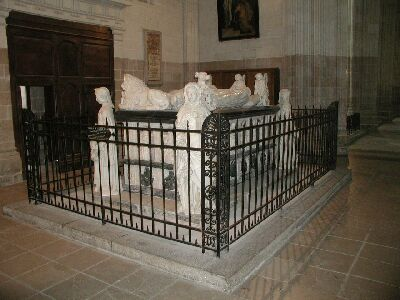


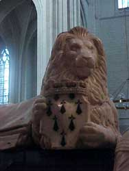
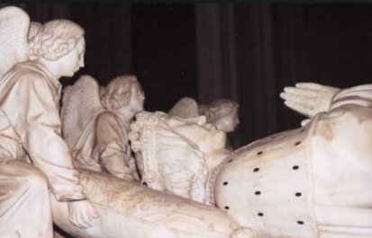
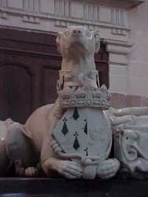
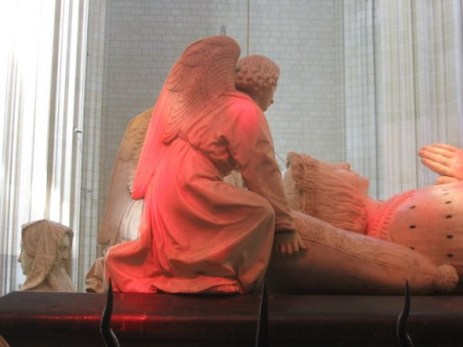
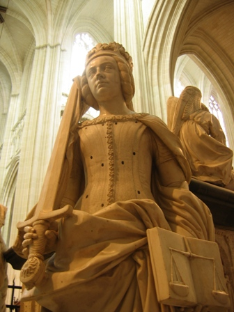
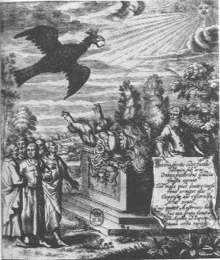
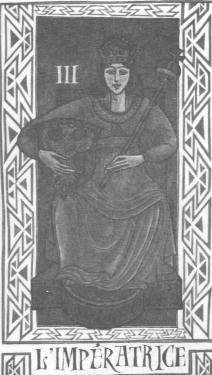
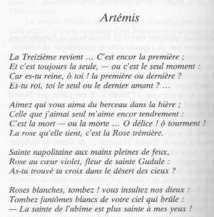


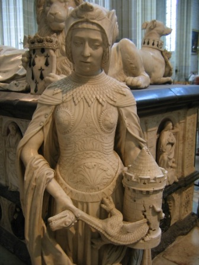


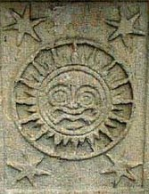
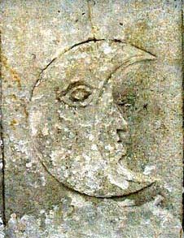
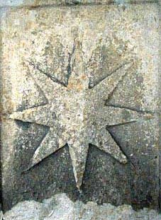
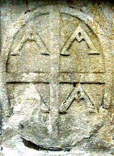
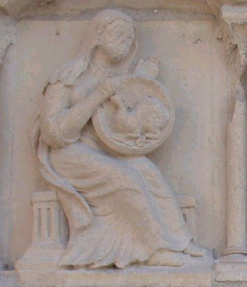


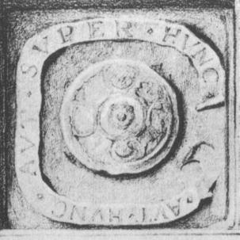

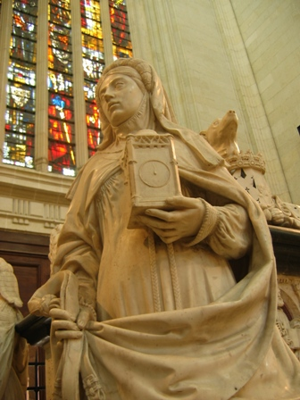
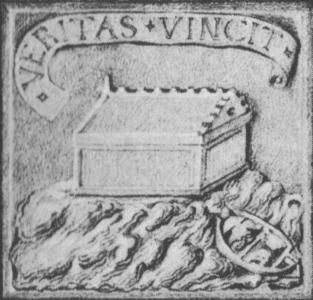
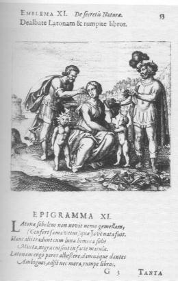
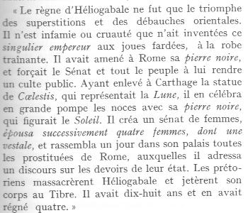
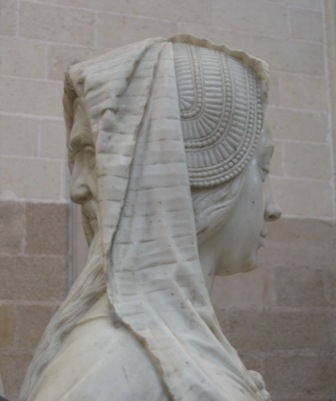
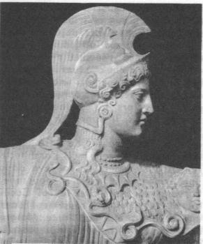
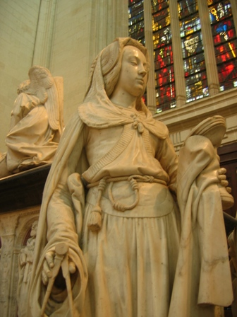


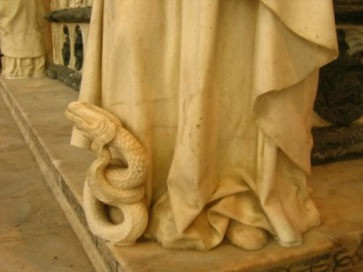


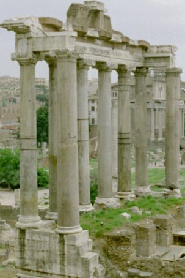
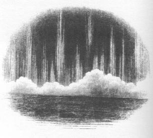
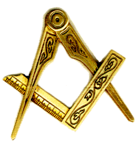


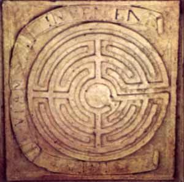
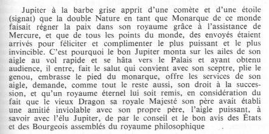


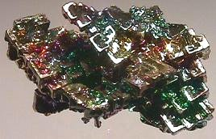
Noms cités
Fulcanelli · Paris · Hermes · Jean · Venus · Atalanta · Saturne · Jupiter · Valentin · Basile · Newton · Canseliet · Pernety · Flamel